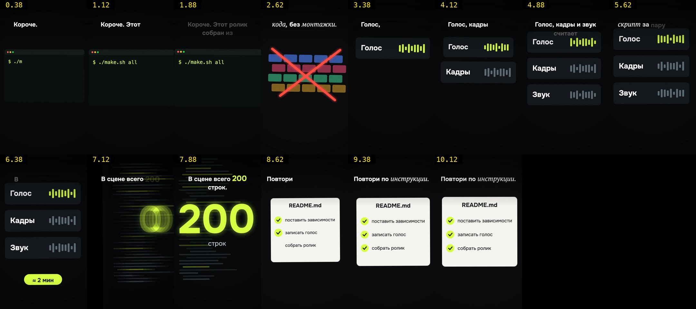

Как мы собираем рилсы про ИИ целиком на ноутбуке
Сценарий, голос, картинку, звук, проверку и заливку делает Claude Code. Я слушаю, ругаюсь и говорю «заливай». Здесь весь стек с версиями, командами, параметрами и граблями, чтобы вы могли собрать такой же конвейер у себя.
00Что получится и сколько стоит
На выходе вертикальный ролик: H.264 + AAC 192k, громкость −15 LUFS, пик не выше −1,5 dBTP, faststart для быстрого старта в ленте. Картинку делаем одним из четырёх движков, в зависимости от формата.
| Движок | Где | Как выглядит | Рендер |
|---|---|---|---|
| 2D-сцена на TypeScript + Canvas в headless Chromium | серия про телевизоры, «Нейросеть vs агент» | без лица, тёмная киношная сцена, ручная камера, субтитры по слову, нарисованные интерфейсы | 45 с – 4 мин на ролик |
| 3D-скетч на three.js в headless Chromium (Metal) | скетчи с Claude и гориллой Горо | low-poly мультик, 2–3 персонажа, диалог | 0,03 с на кадр, ролик за ~20 с |
| 3D-карта MapLibre с рельефом | «Claude ищет место по фото» | фото улетает на глобус, точки и кольца промаха | ~3,5 мин на 42 с |
| Генеративное видео LTX-2.5 локально + своя отрисовка поверх | пародийный скетч с «боссом» | живой персонаж говорит под наш звук | 50–100 с счёта на 1 с видео |
Деньги
Отдельных трат на ролик ноль: ни облачного синтеза речи, ни облачной генерации видео. Платим только подписку на Claude, через неё работает и агент-сборщик, и герой роликов. Для сравнения: облачная генерация через сервисы вроде fal по нашей прикидке стоила бы $4–8 за шортс.
Время машины на один 40-секундный рил
| Шаг | Время |
|---|---|
| Синтез голоса OmniVoice | ≈1,35 с счёта на 1 с речи, загрузка модели ≈55 с |
| Распознавание речи (Whisper large-v3, CPU) на каждую реплику и на финал | несколько минут |
| Рендер 2D-сцены | 45 с – 4 мин |
| Свой замер для фактчека (пример: 5 сайтов × 2 прогона × 2 режима) | ≈12 мин |
| LTX-2.5: клип 2–4 с | 2–7 мин |
Дольше всего идёт не вычисление, а постановка: тему, сценарий и сцену пишет агент, и это несколько итераций с моими правками.
01Железо и установка
- Apple M1 Max, 64 ГБ единой памяти, macOS. Всё на одном ноутбуке.
- Память решает. LTX-2.5 q8 весит на диске 42 ГБ, при генерации берёт около 27 ГБ. Автор
ltx-2-mlxсоветует от 32 ГБ, с флагом--low-ramхватает 16. - Микрофон для живого голоса: айфон, приложение «Диктофон», файл по AirDrop. Встроенный микрофон MacBook хуже (щелчки рта, SNR 33 дБ против 41). AirPods не годятся: 16 кГц.
Окружение
| Что | Версия | Откуда |
|---|---|---|
| Node.js | 24 (подходит ≥22.16) | brew |
| TypeScript | 5.9 | npm, сцены компилируются tsc |
| Python пайплайна | 3.11 | brew |
| ffmpeg | 8.1 | brew |
Rubber Band (rubberband-r3) | 4.0 | brew, растягивать слова без «робота» |
| Playwright (Python) | 1.60 | pip + playwright install chromium |
| faster-whisper | 1.2, модель large-v3 | pip |
| OmniVoice (основной голос) | 0.2.1, torch 2.8, веса k2-fsa/OmniVoice (3 ГБ) | отдельный venv |
| Chatterbox Multilingual | с GitHub, модель v3 | отдельный venv |
| F5-TTS (бывший основной) | 1.1, чекпойнт Misha24-10/F5-TTS_RUSSIAN | pip |
| LTX-2.5 | dgrauet/ltx-2-mlx, веса ltx-2.5-mlx-q8 | отдельный проект uv |
| three.js | 0.169 | локально, без CDN |
| MapLibre GL JS | 5.6 + maplibre-contour | локально |
Каждый синтезатор речи живёт в своём venv: версии torch и transformers у них конфликтуют. Пайплайн вызывает их отдельными процессами.
# Пайплайн
brew install ffmpeg rubberband python@3.11 node
python3.11 -m pip install faster-whisper playwright numpy scipy soundfile pillow librosa
python3.11 -m playwright install chromium
# Голос: OmniVoice в отдельном окружении
python3.11 -m venv .runtime/tts-omnivoice/venv
.runtime/tts-omnivoice/venv/bin/pip install omnivoice
# веса с Hugging Face: k2-fsa/OmniVoice
# Видео: LTX-2.5 на Apple Silicon
git clone https://github.com/dgrauet/ltx-2-mlx .runtime/ltx-2-mlx
cd .runtime/ltx-2-mlx && uv sync --all-extras
# веса ltx-2.5-mlx-q8 (42 ГБ, у нас качались ~2 ч). LTX-2.5 на HF закрыт входом в аккаунт;
# без входа можно начать с 2.3 q8Замок на тяжёлые задачи
Синтез и рендер запускаем только через именованный замок на всю машину. Несколько агентов собирают ролики параллельно, а GPU и модель одна. Это восемь строк:
# locked.py
import fcntl, subprocess, sys
name = sys.argv[1]; cmd = sys.argv[sys.argv.index('--') + 1:]
with open(f'/tmp/quick-reels-{name}.lock', 'w') as f:
fcntl.flock(f, fcntl.LOCK_EX)
sys.exit(subprocess.call(cmd))python3 locked.py voice -- <команда синтеза>
python3 locked.py render -- <команда рендера или LTX>Папка одного ролика
n06-web-ads/
README.md паспорт: статус, команды, устройство, музыка с кредитом
SCRIPT.md утверждённый текст + раскадровка с таймкодами
research.md выбор темы и три варианта хука
reel.json данные сцены: цифры, бренды, музыка {file, offset, gain, credit}
story.json реплики и пословные таймкоды (генерируется)
voice-track.json склейка голоса: sha256, реплики, слова (генерируется)
voice/
chunks.json реплики для синтеза: текст, пауза после, скорость
lines.json те же реплики для субтитров
gen_omni.py синтез → raw-N.wav
trim.py подрезка по распознаванию → line-N.wav, склейка
live.py подмена синтеза живой начиткой
tools/
measure.py свой замер для фактчека
preview.py сухой просмотр кадров до рендера
build.py звук + покадровый рендер
finish.py сведение, контактный лист, громкость, проверка, итог
qa/ final-result.json, sheet.jpg, factcheck.md, sources/
publish/ caption.txt, leadmagnet/INSTRUCTION.md
output/ final.mp4Медиа, node_modules и окружения в git не кладём.
02Как устроена работа с агентом
Код из этого гайда почти весь написал Claude Code. Мой вклад — вкус, правки и слово «заливай». Ниже то, что делает эту связку рабочей, а не хаотичной.
Роли
| Кто | Что делает |
|---|---|
| Я | выбираю тему, утверждаю сценарий, смотрю ролик, даю короткий фидбек («пальцы кривоваты», «голос печальный»), говорю «заливай» |
| Главная сессия Claude Code | продюсер: держит контекст, раздаёт задачи фоновым агентам, проверяет их результат (контактный лист, фактчек), докладывает мне по-русски |
| Фоновые агенты | исполнители: ресёрч темы, сборка ролика, A/B голосов, сбор фактуры для гайда. Работают параллельно, каждый в своей папке, по завершении присылают отчёт |
Пока один агент генерирует губы в LTX, второй пишет сценарий следующего ролика, а третий разбирает чужой аккаунт. Тяжёлое не сталкивается благодаря замку из раздела 01.
Файлы правил
CLAUDE.mdв корне — короткий навигатор: «общение по-русски», «ролики не публиковать без отдельного указания», «перед синтезом прочитай INSTALL.md», «техническая проверка не означает одобрения».AGENTS.md— источник правды по проекту: карта модулей, что нельзя сломать, текущее состояние.GUIDE.md— этапы нового ролика и чек-лист публикации.README.mdв каждой папке ролика — паспорт: статус, команды, устройство, музыка с кредитом, слабые места, история версий. Следующая сессия продолжает работу по нему, а не по памяти.
Постоянные правила (агент их не нарушает)
- Не публиковать без моего отдельного «заливай». Зелёная проверка не значит одобрения.
- Платные API (облачный синтез, облачная генерация) только с моего согласия.
- Сценарий показывать до сборки. Исключение — когда я сам сказал «сделай, а я пошёл спать».
- Синтез и рендер только под замком.
- Площадки только читаем: не лайкать, не комментировать, не отвечать на комменты от моего имени.
- Не копировать лица реальных людей. Архетип можно.
- Не вводить пароли и токены, не логиниться за меня.
- Старые версии не удалять:
output/_v1.mp4,_v2/.
Память между сессиями
Контекст сессии кончается, а проект нет. Поэтому у агента есть память: папка Markdown-файлов, по одному факту в файле, и индекс MEMORY.md, который грузится при старте.
---
name: sfx-vacuum-keep
description: шумовые вжухи оставляем — «кто там шмыгает» дал комменты под хитом
metadata:
type: feedback
---
Вжухи на склейках по умолчанию включены. Отменяет прежнее решение убрать их.
**Why:** топ-коммент «Кто там шмыгает постоянно?» (111 лайков) под роликом 212K.
**How to apply:** ставить вжух на каждую склейку; убирать только по прямой просьбе.- Типы:
user(кто я),feedback(мои правки с причиной),project(состояние роликов, даты),reference(ссылки). - Фидбек пишется с «почему». Без причины агент применит правило не там.
- Жёсткий гейт: не задавать мне вопрос, пока не проверил память. Ответ мог быть записан. Спросить то, что лежит в памяти, считается провалом.
- Устаревшее не копится: прежнее решение переписывается новым, неверное удаляется.
Как пишется задание фоновому агенту
Агент начинает с нуля и не видит нашего разговора. Поэтому задание самодостаточное. Шаблон, по которому собраны ролики этого гайда:
Репо: <путь>. Отчёт по-русски. Собери рил N08 в <папка>/ (там уже research.md, SCRIPT.md — прочитай целиком).
Сценарий одобрен: «так давай делать».
Обязательные правки текста: <что поменять и почему>.
Перед синтезом обнови число звёзд через gh api и поправь реплику, если оно устарело.
Делай по образцу <предыдущий ролик>: <файлы, которые прочитать>.
Грамматика: тёмный киношный вид, правдоподобные интерфейсы, огромные лаймовые цифры,
склейка на каждую фразу, никаких рук. Новая сцена — отдельным файлом, чужие не править.
Голос: OmniVoice-клон, синтез ТОЛЬКО под locked.py voice, рендер ТОЛЬКО под locked.py render.
Распознавание каждой реплики. Вжухи на склейках включены. Музыку не повторять подряд.
Также: подпись, инструкция для лид-магнита, factcheck.md, sheet.jpg, final-result.json, README.
Сам посмотри sheet.jpg и исправь наложения до финала.
Ничего не публиковать, платные API не вызывать.
Итог: output/final.mp4. В отчёте: длительность, финальный текст, музыка, слабые места.Что в нём важно:
- Что прочитать — конкретные файлы образца. Иначе агент изобретёт заново и выйдет хуже.
- Что нельзя — явно, каждый раз.
- Что сдать — список файлов и формат отчёта, включая слабые места. Агент, которого просят назвать слабые места, их называет; агент, которого не просят, рапортует «всё отлично».
- Самопроверка глазами — контактный лист до показа мне.
Петля фидбека
Реальные примеры: «кривоваты пальцы» → руки убраны из всей серии. «не так же ярко, как наш популярный видос» → ролик пересобран в грамматике хита. «звук пылесоса раздражает» → вжухи убраны, а после 212K и коммента «кто шмыгает» возвращены навсегда. Если три итерации не сходятся, агент сам предлагает сменить подход, а не латать дальше: так голос «босса» ушёл от подбора тембра к клону напористой записи.
Передача готового
Готовый ролик агент копирует на рабочий стол вместе с подписью и инструкцией для лид-магнита и открывает плеером. Instagram я выкладываю с телефона сам, YouTube и TikTok по моему слову заливает скрипт.
03Тема и сценарий
Откуда берём темы
- Залетевшие рилсы в нише. Скрипты снимают сетки профилей и считают: прирост подписчиков между двумя срезами, медиану просмотров последних 10–20 роликов к подписчикам (больше 1 значит, что контент разгоняет аккаунт), возраст аккаунта и частоту выхода. Только смотрим: не лайкаем, не подписываемся. YouTube и TikTok читаем через
yt-dlp --flat-playlist -J. - Свежие репозитории GitHub.
gh search reposиgh apiпо проектам за последние недели. Звёзды меряют интерес разработчиков, а не зрителей, поэтому темы ранжируем по трём осям: «вау», «касается лично», «сложно ли показать». Так нашлись cleanyourtv, free-my-tv, tv-detox и mibox-skill. - Комменты под своим хитом. Под роликом про телевизор спросили «С WebOS так же можно?» и «От рекламы на телефоне так же можно?». Оба вопроса стали отдельными роликами. «А без Клода как?» вошло в лид-магнит.
Формула серии про телевизоры:
Как пишем текст
- Рил до 40 секунд, один пример, тезис в первую секунду, методология в описание. Правило родилось после провала ролика на 2:11 с таблицами. Оговорка: сам хит про телевизор шёл 55 секунд. Длину решает темп, а не секундомер.
- Хук картинкой, а не текстом. В ролике про геолокацию первый кадр — голое фото без графики. Зритель сам думает «где это?».
- Сценарий видит человек до сборки. Копия удачного ролика на том же каркасе выходит слопом.
- От чужого хита берём ритм, а не формулировки. Однажды четыре фразы повторили конструкции образца, и пришлось переписывать своими словами.
- Числа пишем словами («двадцать пять приложений»), иначе синтез читает их криво.
- Порядок сокращения прописываем заранее: если синтез вышел длиннее 40 с, что резать первым, что вторым.
- Текст прогоняем через humanizer-ru (MIT, 67 признаков машинного текста):
npx skills add ilyautov/humanizer-ru.
Шаблон брифа для агента-сборщика
Рил 1080×1920, ~40 с, без лица, голос за кадром. Ничего не публиковать.
Образец грамматики: <ссылка на хит>, посмотри 20+ кадров. Берём грамматику, не содержание:
- кадр всё время в движении, ни одного статичного слайда, таблиц и баров;
- один крупный предмет в кадре, смена каждые 2–4 с по словам голоса;
- субтитры по слову вверху: мелкая строка + крупная, ключевое слово курсивом,
цифры акцентным цветом;
- интерфейсы (окно Claude, терминал) аккуратные, как настоящие, но нарисованные нами,
без логотипов;
- счётчики реально крутятся (0→25).
Текст утверждён: SCRIPT.md. Ничего сверх фактов из qa/factcheck.md не утверждать.
Раскадровка: <9–17 планов по фразам>.
Голос: <движок, референс>, распознать каждый кусок, спорные слова переписать.
Проверка: сухой просмотр 20+ кадров до рендера, factcheck.md (утверждение → цитата),
−15 LUFS, распознавание всей склейки.Правила честности
- Каждое утверждение подкреплено цитатой. В
qa/factcheck.mdлежит цитата, вqa/sources/первоисточник: README репозитория, ответ GitHub API с датой, снимок комментов. - Свой замер вместо чужой цифры. Блогеры писали, что Claude по фото находит место «с точностью до двух метров». Мы провели слепой тест: метаданные стёрты, обратный поиск по картинке запрещён, отдельный агент без ключа. Улица в Кунгуре: промах 444 м при собственной уверенности агента 25 %. Дом в Сербии: промах 54 км.
- Агент против той же нейросети без инструментов. Одна и та же модель без инструментов дала 20 описаний и ноль телефонов. С веб-поиском — 20 компаний за ~8 минут. Потом все 20 проверены по первоисточникам: телефоны настоящие, но три федеральные сети агент записал в малый бизнес, так что годных 16. Эту ошибку мы вынесли в сценарий.
- Реклама на телефоне. Цифру мы получили своим замером через браузер-робота, рекламе блокировщика не верили. Запросов стало на треть меньше, а вес страниц почти не изменился. Так и сказали.
- Честный подвох в кадре: «на LG так же нельзя», «часть ускорения дала обычная перезагрузка».
- Чужое без нужды не запускаем. README и SKILL.md читаем через
gh api …/contents. Репозиторий с установкой «скачай и выполни» и VPN-клиентом в комплекте отбраковали. - Без логотипов, скриншотов и реальных людей. Интерфейсы рисуем сами, бренды пишем текстом. В пародии персонаж — обобщённый архетип: в промптах нет ни актёра, ни сериала.
- Атрибуция: автор и лицензия фото в кадре, источники карты на карте, кредит музыки в описании.
04Где берём референсы и приёмы
Ни одного приёма мы не придумали с нуля. Всё взято у роликов, которые уже залетели, и разобрано до чисел. Новость без доказанного формата — это гипотеза, а формат, который уже набрал миллион, — это ставка.
Шаг 1. Срез хитов ниши
- Список авторов. 65 русскоязычных аккаунтов про ИИ: нашли поиском по нише и по «похожим», дополняем по ходу.
- Сетки профилей. Скрипт снимает страницу
/reels/каждого автора: просмотры, лайки, комменты, дата. Только чтение: не лайкаем, не подписываемся. Публичный API профилей быстро отвечает 429, поэтому медленно и через обычную страницу. - Критерий хита: ролик набрал не меньше 5 медиан своего автора и не меньше 100 тыс. просмотров. Так отсекается «большой аккаунт — большие цифры».
- Результат первого среза: 106 хитов у 65 авторов. Они сводятся к десяти простым форматам. 62 из 106 без лица. Кодовое слово в комменты почти везде, у маленьких аккаунтов оно даёт от 2,7 до 29 тыс. комментариев.
Шаг 2. Разбор одного хита до кадра
# скачать (yt-dlp модулем из Python 3.11)
python3.11 -m yt_dlp -o 'videos/%(id)s.%(ext)s' 'https://www.instagram.com/reel/<ID>/'
# кадр каждые 0,5 с → контактный лист 8×N, смотрим глазами
ffmpeg -i hit.mp4 -vf "fps=2,scale=270:-1,tile=8x6" -frames:v 1 sheet.jpg
# склейки: где меняется картинка
ffmpeg -i hit.mp4 -vf "select='gt(scene,0.3)',showinfo" -f null - 2>&1 | grep pts_time
# текст речи со словами и таймкодами
python3.11 -c "from faster_whisper import WhisperModel as W; \
m=W('large-v3',compute_type='int8'); s,_=m.transcribe('hit.mp4',language='ru',word_timestamps=True); \
[print(round(x.start,2), x.text) for x in s]"Из этого заполняется карточка разбора:
| Что смотрим | Пример (хит про телевизор без рекламы, 1,62 млн) |
|---|---|
| Первая секунда | телевизор крупно, на экране реклама перед сериалом |
| Длина и темп речи | ~45 с, быстрый, паузы до 0,5 с |
| Склейки | каждые 2–4 с, кадр всё время в движении, ни одного слайда |
| Сколько предметов в кадре | один крупный |
| Субтитры | по слову, вверху, тонкий белый; ключевое слово курсивной антиквой, цифры цветом |
| Интерфейсы | аккуратное окно чата плавает поверх сцены |
| Цифры | счётчики реально крутятся |
| Структура | боль → агент делает → репозиторий с цифрами → обратимо → CTA |
| Лицо, голос | без лица, голос за кадром |
Шаг 3. Разбор аккаунта целиком
Когда интересен не ролик, а автор, снимаем сетку профиля и считаем: медиана просмотров к подписчикам, какие ролики дали ×3 и больше, частота выхода, есть ли воронка. Так мы разобрали шесть аккаунтов, и от каждого взяли своё:
| Чей формат | Что взяли |
|---|---|
| Хит про телевизор без рекламы | грамматику кадра всей серии про ТВ: движение, один предмет, субтитры по слову, счётчики |
| Канал про историю технологий, тот же стек, что у нас | «один предмет в кадре», субтитры по 2–3 слова, загадка в первые 0,2 с |
| Тюнинг-блогер с лицом (365 тыс.) | хук = чужой уверенный тезис, «сейчас проверю», доказательство прогоном, рефрен «Не за что. Удачи.» |
| Автор, выросший с нуля до 393 тыс. | схема роста: парсить хиты ниши → 4–5 роликов в день → кодовое слово и лид-магнит |
| Аккаунты «как ИИ устроен внутри» и «агенты в бизнесе» | ролик отвечает на вопрос, который зритель боится задать; бизнес-угол вместо технического |
| Западные аналоги | Shorts в нише ИИ сами по себе не растят (медиана 1,4–2,4 тыс.); растят свой артефакт и воронка |
Шаг 4. Комменты под своими хитами
Самый дешёвый источник. Под нашим роликом спросили «С WebOS так же можно?», «А на телефоне?», «А без Клода как?», «Кто там шмыгает?». Первые два стали отдельными роликами, третий вошёл в лид-магнит, четвёртый решил судьбу звуков на склейках.
Шаг 5. Приёмы монтажа: свой справочник
- 24 приёма камеры (панорама, наезд, whip, смэш-кат, J-склейка и т. д.) оформлены как скилл для агента: файл
SKILL.mdв.agents/skills/camera-moves/. У каждого приёма числа (длительность, амплитуда, ease) и вариант для Canvas 2D. Агент читает его перед сценой. - Правила моушена из открытого стартового набора к HyperFrames (MIT): таблица ease и длительностей, законы кадра, ворота качества. Подробно в разделе про HyperFrames.
- Наш фидбек как правила. «Ощущение презентации», «иллюстрации статичные», «картинка висит и мешает» превратились в запреты с диагнозом: в памяти агента и в брифе каждого ролика.
Шаг 6. Бриф собирает всё вместе
Каждый ролик начинается с брифа, где референс и запреты прописаны явно:
Образец грамматики — хит <автор> (1,62 млн): videos/<id>.mp4 — посмотри 20+ кадров.
Берём ГРАММАТИКУ, не содержание:
- кадр всё время в движении, ни одного статичного слайда, таблиц, баров;
- один крупный предмет в кадре, сменяется каждые 2–4 с;
- субтитры по слову вверху; ключевое слово курсивной антиквой, цифры акцентным цветом;
- интерфейсы аккуратные, как настоящие, плавают поверх сцены;
- счётчики реально крутятся.
Обязательно прочитать: память «чего не делать» (провал длинного рила с таблицами),
«ощущение презентации», «грамматика кадра», «копия удачного = слоп».05Голос
Слепой тест шести синтезаторов
Условия: один референс (мой живой голос, 7,3 с после чистки щелчков), четыре одинаковые фразы, родной темп, seed 42, движки строго по одному. Номера раздавал random.SystemRandom().shuffle, ключ лежал отдельно. Я слушал склейку с бипами между вариантами, не зная, где какой.
| Движок | Слогов/с | Щелчков/мин | с на 1 с речи | Память | Лицензия | На слух |
|---|---|---|---|---|---|---|
| F5-TTS, русский чекпойнт | 6,12 | 140 | 4,84 | 4,5 ГБ | CC-BY-NC-4.0 | мимо |
| VoxCPM2 (2B) | 5,85 | 219 | 1,23 | 13,3 ГБ | Apache-2.0 | «норм» |
| Qwen3-TTS 1.7B | 5,09 | 132 | 1,66 | 6,1 ГБ | Apache-2.0 | «хочется быстрее» |
| CosyVoice3 0.5B (только CPU) | 4,85 | 78 | 4,50 | 7,6 ГБ | Apache-2.0 | непонятно |
| Fish Audio S2-Pro (4B) | 5,47 | 123 | 3,45 | 28,7 ГБ | некоммерческая | плохо |
| OmniVoice (k2-fsa) | 5,77 | 116 | 1,35 | 4,4 ГБ | код Apache-2.0, веса CC-BY-NC | победитель |
Референс
- 3–4 дубля по ~12 с. Задание себе: «как другу в машине: живо, с иронией, с ускорением и паузой, без “эээ”».
- Щелчки рта чистим до клонирования:
adeclick=w=55:o=75:t=2в два прохода (было 83 щелчка, стало 8). Клон копирует треск референса. - Рядом с файлом лежит
.txtс расшифровкой: модели принимают пару «аудио + текст».
OmniVoice: основной рецепт
import torch, numpy as np, soundfile as sf
from omnivoice import OmniVoice
m = OmniVoice.from_pretrained(MODEL_DIR, device_map='mps', dtype=torch.float16)
prompt = m.create_voice_clone_prompt(ref_audio='ref.wav', ref_text=open('ref.txt').read().strip())
torch.manual_seed(42); np.random.seed(42)
x = m.generate(text=chunk_text, voice_clone_prompt=prompt, speed=1.1) # темп только родным параметром
sf.write('raw-N.wav', x, 24000)- Одна реплика — один кусок. Ошибка ударения тогда стоит одной реплики, а не всего ролика.
- Темп 1.1–1.12 родным
speed, не черезatempo. Без этого 40-секундный текст выходил на 44 с. - Обрыв конца. Если последние 30 мс громче, чем пик −30 dB, окончание оборвано. Тогда кусок генерируется заново с жертвенным хвостом «Вот так вот.», а хвост вырезается по распознаванию в самой тихой точке.
- Подрезка: Whisper large-v3 с
word_timestamps=True,beam_size=5. Начало режем по первому слову минус 0,12 с, конец по энергии (последний кадр громче пик −45 dB плюс 80 мс). Паузы между репликами 0,10–0,40 с, перед «битом» отдельная 0,3–0,5 с. - Ударение знаком
́OmniVoice слушает: «попе́й пивка́», «Кло́д». - Выход:
voice-track.jsonс пословными таймкодами. От них зависят субтитры, склейки и звуки. - Голос по описанию (voice design).
instructпринимает только теги: пол, возраст, высота, акцент. Каждый вызов даёт новый тембр. Рецепт: 4 набора тегов × 2–6 сидов, удачный дубль сохранить и дальше клонировать его. Минус: интонация у такого голоса ровная, персонаж звучит уныло.
Chatterbox Multilingual: голос с характером
MIT, русский есть, работает на Apple Silicon через mps. Ставим с GitHub: на PyPI старая версия.
from chatterbox.mtl_tts import ChatterboxMultilingualTTS
tts = ChatterboxMultilingualTTS.from_pretrained(device='mps', t3_model='v3')
wav = tts.generate("Да ты кто тако́й вообще?!!", language_id='ru',
audio_prompt_path='ref.wav', exaggeration=2.0, cfg_weight=0.5, temperature=0.8)- Ручка
exaggerationв диапазоне 0,5–1,4 подачу почти не меняет. Интонацию задаёт референс. Настоящий крик вышел только на 2,0–2,5 и не на каждом сиде. - Лучший референс для злого персонажа: своя напористая запись, опущенная на 3 полутона с сохранением формант:
rubberband-r3 --formant -p -3. - Баг с «ё»: нормализация раскладывает букву, и слово теряет последнюю букву. Подавайте «е», в омографах ставьте ударение руками (
де́ньги). - Скорость: ~2,4 с счёта на 1 с речи на M1 Max.
- Дубли отбираем автоматически: сначала только те, где распознавание совпало на 100 %, затем по сумме z-оценок темпа, разброса высоты тона и громкости.
F5-TTS: почему ушли
- Первое слово: с гласной F5 приклеивает «к», с согласной может съесть слово целиком. Лечили жертвенным «Короче.» в начале.
- Обрывает окончания. Лечили жертвенным хвостом и подрезкой по распознаванию.
- Метки ударения F5 не слушает. Слово «модель» читает с твёрдым «э», такие слова приходилось заменять.
- Ускорение 1.15 звучит ужасно. В слепом тесте проиграл и в 3,5 раза медленнее OmniVoice.
Живой голос
Живая начитка пока лучше любого клона. Лучший скетч озвучен мной на айфон, синтезу оставлены мемные голоса.
# айфон
highpass=f=80,adeclick=w=55:o=75:t=2,acompressor=threshold=-22dB:ratio=1.8:attack=10:release=150:makeup=1.5
# MacBook (тяжелее)
highpass=f=80,adeclick=w=55:o=75:t=2,adeclick=w=55:o=75:t=2,afftdn=nf=-25,acompressor=threshold=-24dB:ratio=2.5:attack=8:release=120:makeup=2- Почистить дубль и прогнать целиком через Whisper large-v3 со словами.
- Сопоставить слова сценария со словами распознавания (
difflib.SequenceMatcher). Границы реплики — первое и последнее найденное слово. Оговорки и повторы выпадают сами. Если найдено меньше 70 % слов, скрипт останавливается. - Резать с запасом 80/120 мс, фейды 10 мс, громкость кусков к медиане (±6 dB), паузы не больше 0,35 с. Темп не трогать.
- Записать тот же
voice-track.json: дальше субтитры, звук и рендер пересобираются сами.
Растянуть слово («мат должен быть смачным»): синтез капсом и удвоением не тянет, atempo 0.5 даёт искажения. Вырезаем слово по распознаванию и растягиваем всё, кроме последних согласных:
rubberband-r3 -q --fine --formant -t 2 in.wav out.wav # затем acrossfade 10 мс и loudnorm TP −206Картинка
window.setTime(t) рисует кадр для момента t, случайность берётся из сидированного генератора. Playwright выставляет t = i/fps, делает скриншот, JPEG по трубе уходит в ffmpeg. Ни один кадр не теряется, а ролик собирается одинаково при каждом запуске.2D-сцены на TypeScript + Canvas
- Одна сцена — один файл на 400–470 строк, например
scene-tv-clean.ts. - Компиляция:
tsc scene.ts --target ES2020 --lib DOM,ES2020 --strict --skipLibCheck --outFile build/scene.js. - Вход:
story.json(реплики и слова с таймкодами) иreel.json(цифры, бренды, хэндл). - События привязаны к словам:
wt(line, 'рекламу')возвращает момент, когда в голосе звучит это слово. Каждый план и каждый звук держится за слово, поэтому после переозвучки всё сдвигается само. - Сцена отдаёт
window.shotTimes(склейки) иwindow.events(события). По ним звук ставит вжухи и эффекты.
Грамматика кадра, проверенная хитом:
- кадр всё время в движении: ручная камера (сумма синусов), наезды, переброс;
- один крупный предмет, склейка на каждую фразу, 2–4 с на план (17 планов на 38 с);
- субтитры вверху по слову: мелкая строка плюс крупная, акцентное слово курсивной антиквой, цифры гигантские лаймовые с глоу;
- тёмный фон с цветным светом, виньетка, зерно;
- интерфейсы (окно Claude, терминал, шторка комментов, настройки ТВ) рисуем кодом, без логотипов;
- счётчики крутятся по-настоящему: 0→25, 1 286→840, 874 МБ→1,8 ГБ;
- хэндл канала только в финале.
Шрифты: Onest (OFL) и курсивная антиква для акцентов. Берите свободную, например PT Serif Italic или Lora: системные шрифты macOS идут под чужой лицензией.
3D-карта (MapLibre GL JS 5.6)
- Проекция globe, рельеф AWS Terrain Tiles с усилением ×1,3, изолинии maplibre-contour. Ключи и аккаунты не нужны.
setTime(t)ждёт событияidleкарты: тайлы догружены в каждом кадре, рывков нет.- Chromium с GPU:
--use-angle=metal --enable-gpu --ignore-gpu-blocklist, ≈0,13 с на кадр.
3D-скетчи на three.js
- Персонажи собраны из примитивов three.js с
flatShading: стилизованный я, Claude (своя терракотовая «галька» с визором, не логотип), горилла Горо. Металл отражаетRoomEnvironment, глубина резкости черезBokehPass. - Жизнь в кадре: дыхание, моргание по расписанию, поворот головы к собеседнику, жесты по репликам, рот по громкости речи, ручная камера.
- Рендер: headless Chromium, ANGLE/Metal, JPEG 95 →
libx264 -preset slow -crf 16. 0,03 с на кадр. Сеть не нужна. - Флаги отладки в URL:
?nocam=1&nomouth=1&nonoise=1&noshadow=1.
Дёрганье моделей искали замером, а не наугад. Скрипт считает межкадровую разницу и «рывок» |dᵢ − (dᵢ₋₁+dᵢ₊₁)/2|. Подозреваемых отключали по одному:
| Вариант | Рывок на трёх кусках |
|---|---|
| как было | 0,39 / 0,70 / 0,57 |
| без ручной камеры | 0,39 / 0,68 / 0,56 |
| без теней | 0,39 / 0,64 / 0,57 |
| без огибающей речи | 0,13 / 0,09 / 0,03 |
Сырая громкость кадр-в-кадр управляла ртом, кивками и масштабом тела. Лечение: огибающая с шагом 5 мс, следящий фильтр attack 45 мс / release 110 мс, не больше 4 раскрытий рта в секунду. Камера стала медленным дрейфом: две синусоиды до 0,47 Гц вместо гармоник до 8 Гц. Средний рывок упал с 0,495 до 0,216.
Горилла выглядела как медведь. Помогли признаки гориллы: холодный почти чёрный мех, отдельная холодная подсветка (тёплый свет делал мех коричневым), голая серая маска лица, надбровный валик, плоский широкий нос, без шеи.
Генеративное видео LTX-2.5 локально
dgrauet/ltx-2-mlx(MIT), веса LTX-2.5 q8 distilled. Лицензия весов LTX-2 Community: бесплатно до $10 млн выручки в год.- 576×1024, 24 fps, потом апскейл: кроп, lanczos до 1080×1920, лёгкая резкость и виньетка.
- Режимы:
generate(текст в видео; картинка в видео с--image кадр 0 1.0) иa2v(картинка + wav → говорящий персонаж с губами под наш звук).
export LTX2_COMPUTE_DTYPE=float16
# 1) «паспорт» персонажа: 9 кадров на нескольких сидах, выбрать лучший кадр
uv run --project .runtime/ltx-2-mlx ltx-2-mlx generate --distilled --model .runtime/models/ltx-2.5-mlx-q8 \
-H 1024 -W 576 -f 9 --frame-rate 24 --seed 7 -p "$PASSPORT, realistic cinematic film still, 35mm" -o still.mp4
ffmpeg -sseof -0.05 -i still.mp4 -frames:v 1 still.png
# 2) говорящий шот от опорного кадра под нашу реплику
uv run --project .runtime/ltx-2-mlx ltx-2-mlx a2v --distilled --model .runtime/models/ltx-2.5-mlx-q8 \
-H 1024 -W 576 -f 81 --frame-rate 24 --seed 42 --image still.png 0 1.0 --audio line1.wav \
-p "$PASSPORT, he talks into the phone, mouth moving clearly with the speech, static camera" -o t1.mp4- Паспорт персонажа: текстовое описание внешности, которое подставляется во все промпты, плюс один опорный кадр. Все шоты делаются от этого кадра, поэтому лицо не плывёт. Последний кадр клипа (
ffmpeg -sseof -0.06) становится входом следующего. - Число кадров для a2v: ближайшее 8k+1, не меньше чем (длина wav − 0,55) × 24. Если wav короче, a2v падает: добиваем
apadи розовым шумом. - Время на M1 Max: 9 кадров 72–174 с; 2 с видео 118–148 с; 3,4 с 183–294 с; 4 с 219–403 с. Ролик на 35 с занял 15–16 прогонов за ~35–50 мин.
- В промпте всегда
locked-off tripod shot, the camera does not move or zoom. Без этого камера уезжает посреди крика. - Букв LTX не умеет. Чат, письмо, таблицу и субтитры рисуем кодом (PIL) поверх размытого кадра, слова появляются по таймкодам распознавания.
- Предметы в руках мутируют: телефон у уха к концу клипа превратился в сигару. Взяли первые 0,55 с.
- Утки стали белыми чайками, выросли пальмы. Помог детальный промпт («brown mallard ducks with glossy green heads and orange feet») и другой сид.
- Реальных людей не генерируем. В промптах только архетип, без имён. Исключение — я сам, по своему фото и голосу.
Руки
Нарисованные кодом руки и сгенерированные пальцы одинаково выдают дешёвую картинку. Убрали: телефон или пульт просто парит с тенью.
07Приёмы монтажа
Монтаж у нас делается кодом: камера, склейки и субтитры накладываются поверх уже нарисованного кадра. Поэтому каждый приём здесь записан числами.
Какие из 24 приёмов камеры реально работают
За основу взят гайд из 24 приёмов (панорама, наезд, долли-зум, whip и т. д.), оформленный как скилл для агента. У каждого приёма есть вариант для Canvas 2D через параллакс: dx = camX / z, s = f / (z − camZ). Вот что из этого в деле:
| Приём | Как у нас |
|---|---|
| Наезд | в каждом плане: масштаб 1,0 → 1,08 за 1,2–1,4 с; на хуке 1,08 → 1,75 на предмет |
| Зум-«панч» | на каждой простой склейке: 1,06 → 1 за 0,16 с |
| Ручная камера | всегда, сумма медленных синусов (числа ниже) |
| Переброска (whip) | на большинстве склеек: 16 из 17 в ролике про приставку |
| Перевод фокуса | как «расфокус под цифры»: фон уходит в размытие, цифра в фокусе |
| Вертикальная панорама | проезд по предмету снизу вверх в первом плане |
| Голландский угол | чуть-чуть: крен плана 0,6–1,1° |
| Стоп-кадр | в скетчах: замирание на 0,75 с перед общим планом |
| Смэш-кат | крэш-зум с тряской на хуке; в звуке музыка рвётся ударом |
| Матч-кат | на зацикленном ролике последний кадр сводится в первый |
| J-склейка | звук склейки на 0,12–0,2 с раньше картинки |
| Кран, долли-зум, FPV, слоумо, спидрамп, таймлапс, шторка, L-склейка | не используем |
Правило из того же гайда, которое мы соблюдаем: у движения должна быть причина. Камера, которая едет просто так, даёт ощущение презентации.
Ручная камера
Накладывается на готовый кадр плана, поэтому работает поверх любой сцены:
const sines = (t, l) => l.reduce((s, [a, f, p]) => s + a * Math.sin(t * f + p), 0);
const hs = 1.04 + .03 * ease(lt / 3) + .012 * Math.sin(t * 1.3); // оверскан 4 %, наезд +3 % за 3 с, «дыхание» ±1,2 %
const hx = sines(t, [[16, .8, 0], [7, 2.1, 1]]); // ±23 px по X
const hy = sines(t, [[13, .7, 2], [5, 1.7, 0]]); // ±18 px по Y
const hr = sines(t, [[.007, .6, 0]]); // крен ±0,4°Оверскан 1,04 нужен, чтобы при сдвиге не открывались края. Частоты низкие, 0,1–0,35 Гц. Случайный шум на каждый кадр выглядит как цифровой дребезг, а не как руки оператора.
Переброска и «панч» на склейке
const lt = t - shots[i].at, wd = shots[i].whip ?? 0, TW = .2;
if (i > 0 && lt < TW && wd !== 0) { // переброска: 0,2 с после склейки
const k = 1 - ease(lt / TW); // ease = cubic out
const dx = wd * k * 420; // новый план въезжает с 420 px
const sc = 1 + k * .08; // и с увеличением 8 %
for (let g = 0; g < 5; g++) put(sc, dx + wd * g * k * 60, g === 0 ? 1 : .22); // смаз: 4 «призрака» по 60 px
} else if (i > 0 && lt < .16) { // простая склейка: панч 6 % за 0,16 с
const k = 1 - ease(lt / .16); put(1 + k * .06, 0);
} else put(1, 0);Направление (whip: 1 или -1) чередуем, чтобы склейки не сливались в одно движение. Классический whip длится 0,3 + 0,3 с, у нас короче, потому что план живёт около двух секунд.
Ритм: склейка на фразу
Склейки берутся из слов голоса: план начинается на слове или за 0,04–0,05 с до него. Сцена сама проверяет, что планы идут по порядку, иначе падает. Замер по готовым роликам:
| Ролик | Длина | Планов | Медиана плана | Мин. | Макс. |
|---|---|---|---|---|---|
| Телевизор без рекламы | 54,7 с | 17 | 2,48 с | 1,07 | 6,15 |
| Реклама на телефоне | 39,9 с | 17 | 2,24 с | 1,24 | 3,91 |
| Телевизор LG | 38,9 с | 15 | 2,75 с | 1,47 | 4,53 |
| Тормозит приставка | 37,7 с | 17 | 1,92 с | 0,96 | 3,93 |
Движение внутри плана начинается сразу, без паузы. Длинные паузы режутся ещё на голосе: между репликами 0,10–0,14 с, внутри реплики всё длиннее 0,34 с ужимается до 0,34 с.
Хук в первую секунду
- Ролик про приставку: с нулевой секунды наезд 1,08 → 1,75 на коробочку, спиннер «тормозит» рывками и тикает шесть раз. На слове «тормозит» выпрыгивает «83 %»: кегль 170 px, лайм с глоу, ease с перелётом, под удар и мутный аккорд.
- Топ-формат: крэш-зум
1 + .05·ease(t/.3)за 0,3 с плюс затухающая тряска16·e^(−7t)px. - Штамп («ПОДВОХ», «КЭШ»): масштаб 2,4 → 1 за 0,18 с, наклон −0,08 рад, появление за 0,1 с. Под него всегда глухой удар.
Субтитры по слову
Текст для показа берётся из lines.json (как писать), время из распознавания готового дубля. Произнесённые слова сопоставляются с показываемыми, поэтому на экране «Claude», а в голосе «Кло́д».
| Параметр | Значение |
|---|---|
| Граница фразы | знак препинания и ≥2 слов, или 5 слов, или пауза >0,3 с, или новая реплика |
| Удержание | до начала следующей фразы −0,02 с, но не дольше конца +0,7 с |
| Появление слова | за 0,04 с до звука, проявление за 0,14 с, подъём на 18 px |
| Уход фразы | гаснет за последние 0,12 с |
| Две строки | мелкая (Onest 42 px, белый 92 %) до первого акцента, дальше крупная (Onest Bold 78 px) |
| Акценты | выбранное слово курсивной антиквой ×1,08; число ×1,25 лаймом #d6ff43 |
| Вёрстка | по центру, строка ≤960 px, верх на Y = 300, тень blur 24, dy 4, 75 %, без плашек |
Поверх кадра лежат радиальная виньетка (до 45 % чёрного), затемнение верха 0–640 px до 55 % под субтитры и зерно 7 % в режиме overlay, которое сдвигается каждый кадр.
Расфокус под цифры
Когда в кадре цифра или финальная шторка комментов, фон рисуется во вспомогательный холст и кладётся с filter = 'blur(14px) brightness(.7)', с запасом 40 px по краям, чтобы размытие не тянуло прозрачность с краёв. Ники в шторке размываются отдельно, blur(11px).
Параллакс по карте глубины
Оживляет статичную картинку лучше, чем медленный зум (Ken Burns). Карта глубины строится локально, без сети:
python3.11 depth.py cover.jpg # Depth-Anything-V2-Small, 0 = дальше, 255 = ближе
python3.11 layers.py cover.jpg 55 105 175 # 4 слоя по порогам глубины- Маска слоя — диапазон глубины, затем морфология
MORPH_CLOSEиMORPH_OPENэллипсом 9×9. Без неё слой рассыпается на сотни пятен. - Всё, что ближе текущего слоя, закрашивается
cv2.inpaint(…, 7, INPAINT_TELEA)по расширенной маске. Иначе при разъезде слоёв открываются дыры. - Края ближних слоёв мягкие: расширение и
GaussianBlur σ=6. - Слои едут с разной скоростью. Предел: дальний слой примерно до 60 px, ближний до 190 px, дальше вылезают следы закраски.
Петля
Ролик, который зритель досматривает по кругу. Длина считается от последней реплики: конец = её конец + 1 с, округлённо до кадра. Последние 0,45 с персонаж и экран возвращаются ровно в композицию первого кадра. На шве тихо (×0,06) звучит первая нота мелодии и зовёт на повтор. Проверка петли — разница между первым и последним кадром.
Метрики «пустого» и «мёртвого» кадра
Глазами такое пропускаешь, поэтому меряем. Болезней две, метрик нужно минимум две.
| Что ищем | Как меряем | Порог |
|---|---|---|
| Кусок без движения | серые кадры 135×240, средняя межкадровая разница < 0,15 | ≤1,5 с |
| Мёртвое время внутри сцены | шаг 1,5 с, превью 320×180; общий наезд камеры гасим перед замером | ≤3 с |
| Пустой кадр | по готовому mp4: сетка 16×8, клетка занята, если >1,2 % пикселей отличаются от медианы кадра; субтитры отрезаны | медиана занятости |
- Медленный наезд маскирует статику: с наездом линтер видел 3 статичные сцены, без него 41.
- Субтитры, которые меняются каждые полсекунды, формально оживляют кадр. В одном лонге 22 % времени шло пустым фоном при зелёной проверке.
- Пустоту лечит содержимое, а не камера: крупнее кегль, уже блок, элемент приходит на стыке реплик, а не на своём слове. Занятость выросла с 23 % до 33–43 %.
- Мерить по DOM нельзя, он врёт (20,5 % против 25 % по mp4). Только по готовому файлу.
Что отвергнуто и почему
| Фидбек | Диагноз | Правило |
|---|---|---|
| «ощущение презентации» | слайд выдаёт вёрстка: заголовок, диаграмма, футер | один кадр с героем, без заголовков; склейки и смена крупности вместо кроссфейдов |
| «иллюстрации статичные» | зум 6 % за 5 с на карточке = Ken Burns | движение внутри кадра: печать, построчное появление, прокрутка |
| «картинка висит и мешает» | двухзонная вёрстка = слайд | картинка занимает весь кадр или её нет |
| «моушен-дизайна нет» | картинка обслуживает реплику, 30 fps, без постобработки | кинетический набор, движение на каждое слово |
Мелкие грабли: мигание прозрачностью у последнего слова переживает гашение строки, поэтому мигать надо цветом. Знак «%» в узком шрифте на крупном кегле может прийти из подменного шрифта огрызком. Длинная реплика переносится и накрывает интерфейс, проверяйте по контактному листу.
08Звуки и музыка
Каркас: четыре функции и шина
import numpy as np
from scipy.signal import butter, sosfilt
SR = 48000
rng = np.random.default_rng(1023)
def T(d): return np.arange(int(d * SR)) / SR
def sine(f, d, decay): # синус со спадом и атакой 3 мс (без щелчка)
t = T(d); return np.sin(2*np.pi*f*t) * np.exp(-t*decay) * np.minimum(1, t/.003)
def bp(x, lo, hi): # полосовой Баттерворт 2-го порядка
return sosfilt(butter(2, [lo, hi], btype='band', fs=SR, output='sos'), x)
def noise(d, decay): # белый шум со спадом
return rng.normal(size=len(T(d))) * np.exp(-T(d)*decay)
def put(track, at, x, g=1., pan=0.): # положить звук на стерео-шину, панорама −1…+1
a = round(at*SR); a0 = max(0, a); b = min(len(track), a + len(x))
if b > a0:
v = x[a0-a:b-a] * g
track[a0:b, 0] += v * np.sqrt((1-pan)/2) * 1.414 # равномощная панорама
track[a0:b, 1] += v * np.sqrt((1+pan)/2) * 1.414decay задаёт скорость спада в 1/с: 300 даёт щелчок в несколько миллисекунд, 3 даёт звон почти на секунду. Три шины (речь, музыка, эффекты) складываются в конце.
Рецепты
| Звук | Рецепт | Длит. | Где звучит |
|---|---|---|---|
| клик | bp(noise(.03,170),1800,8000)*.8 + sine(2600,.02,240)*.3 | 30 мс | тумблеры, Enter |
| клавиша | bp(noise(.025,220),1500,6000)*.7, каждый раз новый шум | 25 мс | печать: шаг 0,05–0,09 с, панорама ±0,2 |
| тик | sine(3400,.018,300)*.5 | 18 мс | счётчики, спиннер; шаг 0,045–0,07 с |
| поп | sine(f,.09,40)*.6 + bp(noise(.02,300),2000,7000)*.2, f 600–1500 Гц | 90 мс | появление плашки; ряд из 6 с шагом 0,07 с, f +90 Гц на каждый |
| удар | sine(62,.4,10) + bp(noise(.14,32),80,900)*.9 | 0,4 с | штампы, крупные цифры |
| аккорд | среднее нескольких синусов: успех 523/784/1046 Гц (до-соль-до), «плохо» 196/233 Гц | 0,4–1,2 с | итог, провал |
| ножницы | bp(noise(.06,90),2500,9000)*1.2 + sine(5200,.04,120)*.4 | 60 мс | зачёркивание |
| ТВ гаснет | bp(noise(.3,12),200,2000)*.6 + sine(90,.3,10) | 0,3 с | выключение |
| гудок пульта | sine(1760,.09,30)*.6 | 90 мс | 4 нажатия вокруг слова |
| пинг радара | sine(1320,.5,7) | 0,5 с | каждые 1,1 с, пока агент ищет |
| касса | «ка»: полосовой шум 60 мс; «чинг»: 4 синуса 2093/2637/3136/4186 Гц, спад 0,35 с | ~0,5 с | деньги в скетче |
| грустный тромбон | пила 196 → 185 → 175 → 165 Гц по 0,3 с, последняя 1,15 с с вибрато 6 Гц, lowpass 1400 Гц | 2 с | провал в скетче |
| кряканье | пила с падающей частотой через две форманты 900–1700 и 2200–3200 Гц | 0,17 с | утки |
| плеск | полосовой шум 600–7000 Гц со спадом 0,16 с и «бульканьем» 23 Гц | 0,7 с | утки садятся в воду |
«Пылесос»: два рецепта
Тот, что прозвучал в хите про телевизор (его приняли за шмыганье носом): сглаженный белый шум под колоколом громкости, 0,3 с, за 0,12 с до склейки, тихо.
def whoosh(d=.3): # хит: мягкий lowpass скользящим средним, колокол sin²
t = T(d); w = rng.normal(size=len(t)); w = np.convolve(w, np.ones(6)/6, mode='same')
return w * np.sin(np.pi*t/d)**2
for at in shots[1:]: put(sfx, at - .12, whoosh(), .10, rng.uniform(-.5, .5))В следующих роликах он стал ярче: шум переходит из полосы 300–1400 Гц в 1400–7000 Гц, 0,42 с, за 0,2 с до склейки.
def vacuum(d=.42): # полосовой шум с подъёмом частоты и колоколом
nn = int(d*SR); t = np.arange(nn)/nn; w = rng.normal(size=nn)
return (bp(w, 300, 1400)*(1-t) + bp(w, 1400, 7000)*t) * np.sin(np.pi*t)**2
for at in shots[1:]: put(sfx, at - .2, vacuum(), .16, rng.uniform(-.5, .5))Сначала я хотел их убрать, потом оставил: топ-коммент «Кто там шмыгает постоянно?» собрал 111 лайков, комменты двигают охват сильнее чистоты звука. Если распознавание финала начинает слышать во вжухах слова, приглушайте их под речью: 1 − 0.45·активность_голоса.
Правила расстановки
| Правило | Как в коде |
|---|---|
| Эффект привязан к слову, а не к секунде | сцена пишет события в events.json, звук читает E['podvoh'] |
| Вжух раньше склейки | −0,12…−0,2 с (звук ведёт картинку) |
| Удар ровно в кадр события | без сдвига |
| Клавиши идут, пока печатается текст | while t < end: put(key); t += uniform(.05,.09) |
| Серия равномерно между двумя словами | E['a'] + (E['b'] − E['a']) · j / N |
| Ускорение серии | T0 + (T1−T0)·(1−(1−x)^(1/3)) |
| Ряд звучит «лесенкой» | частота +90…110 Гц на элемент |
| Ряд едет по панораме | −0.4 + 0.8·j/24 |
Музыка под голосом
for c in cues: duck[round(c['start']*SR):round(c['end']*SR)] = .3 # под репликой ×0,3
k = np.ones(int(.25*SR)) / int(.25*SR)
duck = np.convolve(duck, k, mode='same') # сглаживание окном 0,25 с
music *= duck[:, None] * .3 # и общий уровень 0,3Итого под речью музыка на уровне 0,09 от исходной (≈ −21 дБ), в паузах 0,3 (≈ −10,5 дБ). Вариант для скетчей: даккинг по энергии голоса, −17 дБ в паузах и −24 дБ под речью, сглаживание 30 мс.
Обрыв и тишина как приём
- Крик: на крике персонажа музыка падает до −80 дБ, а на следующей реплике возвращается на 3 дБ тише с фейдом 1,2 с.
- Удар: музыка гасится за 7,5 мс, в ту же точку кладётся «бум» (синус 70 → 45 Гц, 0,7 с), дальше реакция героя в тишине.
- Стоп-кадр: один низкий блип 220 Гц и 0,75 с паузы.
- Музыку можно написать кодом: в зацикленном ролике это маримба, до мажор, 128 BPM, 16 нот восьмыми плюс бас четвертями.
Фонотека
Кладём только треки, которые разрешают коммерческое использование с указанием автора.
| Автор | Треки | Лицензия |
|---|---|---|
| Kevin MacLeod, incompetech.com | Voltaic, Electrodoodle, Hard Boiled, Blip Stream | CC BY 4.0 |
| Scott Buckley, scottbuckley.com.au | Simulacra, Phoenix, Starfire, Convergence | CC BY 4.0 |
| Broke For Free, «Directionless EP» | Night Owl, Mells Parade, Day Bird | CC BY 3.0 |
| Lee Rosevere, «Music for Podcasts 2» | Under Suspicion, Puzzle Pieces, Heat Haze | CC BY 3.0 |
- Трек не повторяется в двух роликах подряд, история ведётся в
used.json. Правило появилось после жалобы «музыка всё время одна и та же». - Строка в описание:
Music: "Puzzle Pieces" by Lee Rosevere, CC BY 3.0, https://creativecommons.org/licenses/by/3.0/.
Сведение и мастер
- Голос:
loudnorm=I=-18:TP=-4:LRA=7, 48 кГц, ×0,9. - Музыка:
-stream_loop -1и даккинг выше. - Эффекты ×0,5 к шине, фейды: вход 20–30 мс, выход 0,5–1 с.
- Мастер:
loudnorm=I=-15:TP=-3:LRA=7,alimiter=limit=0.7. В mp4 получается −15,2…−15,4 LUFS. - Синусные эффекты после AAC дают пик выше 0 dBFS. Для скетчей поэтому
lowpass=15000,alimiter, затем двухпроходный линейныйloudnormдо −15 / TP −2, а перед муксом выброс гасится отдельно.
09Сборка по шагам
На примере ролика про рекламу на телефоне:
L="python3 locked.py"; PY=python3.11; N=n06-web-ads
# 0. фактчек: свой замер (~12 мин)
$PY $N/tools/measure.py
# 1. голос по репликам из voice/chunks.json → voice/raw-N.wav
OMNI_SPEED=1.12 $L voice -- .runtime/tts-omnivoice/venv/bin/python $N/voice/gen_omni.py
# 2. подрезка по распознаванию, склейка, пословная разметка → voice-track.json
$L voice -- $PY $N/voice/trim.py
# 2б. (по желанию) живая начитка вместо синтеза
$L voice -- $PY $N/voice/live.py
# 3. сухой просмотр: кадры каждые 0,75 с, контактные листы, склейки и события
$L render -- $PY $N/tools/preview.py
# 4. звук + покадровый рендер → output/picture.mp4 (~4 мин)
$L render -- $PY $N/tools/build.py
# 5. сведение и проверка → output/final.mp4, qa/sheet.jpg, qa/final-result.json
$L render -- $PY $N/tools/finish.pyРендер 2D изнутри
Playwright Chromium headless, окно 1080×1920, device_scale_factor=1. Ждём window.ready === true, затем для каждого кадра setTime(i/30) → screenshot(type='jpeg', quality=94) → ffmpeg:
ffmpeg -f image2pipe -vcodec mjpeg -framerate 30 -i - \
-c:v libx264 -preset fast -crf 18 -pix_fmt yuv420p -movflags +faststart picture.mp4
# сведение
ffmpeg -i picture.mp4 -i master.wav -c:v copy -c:a aac -b:a 192k -ar 48000 -shortest -movflags +faststart final.mp4Локальный http-сервер раздаёт корень проекта, шрифты грузятся через FontFace. Любая ошибка страницы (pageerror, console.error) валит сборку.
10Проверка
Итоговый скрипт пишет qa/final-result.json. Флаг technical_pass ставится, только если прошло всё:
| Проверка | Порог | Как |
|---|---|---|
| Файл декодируется без ошибок | exit 0 | ffmpeg -v error -xerror -i final.mp4 -f null - |
| Длительность | ≤ 40 с | ffprobe |
| Размер | ≤ 100 МБ | — |
| faststart | moov раньше mdat | первые 200 КБ файла |
| Громкость | −15 ± 1 LUFS, пик ≤ −1,5 | ebur128=peak=true |
| Статика | кусок без движения ≤ 1,5 с | межкадровая разница на сером 135×240 |
| Текст финала против сценария | совпадение ≥ 0,9 | Whisper large-v3 по всему mp4, difflib по словам с алиасами |
- Распознавание каждой реплики ещё до сборки. Пропавшее слово лечим переписыванием текста, а не перебором сидов.
- Контактный лист
sheet.jpg(кадр каждые 0,75 с, 8 в ряд) смотрим глазами до показа человеку. Зелёная автопроверка однажды пропустила ролик, который выглядел как презентация. - Сухой просмотр до рендера ловит наложения, переполненные плашки, обрезанные элементы и выдуманные цифры дешевле, чем полный рендер.
- Техническая проверка не значит одобрение. Публикует только человек.
Где распознавание врёт
- оглушение конечных согласных: «баг» → «бак», «прод» → «прот»;
- числа пишет цифрами, «так же» слитно, «чтоб» как «чтобы»;
- дописывает слова из своей языковой модели: «гит» → «гид» во всех 12 дублях. Перепроверяйте со словарной подсказкой, но не подсовывайте текст реплики целиком;
- ударений не слышит вообще. Ухо обязательно.
11Публикация и CTA
Ролик выходит только после моего «заливай». YouTube и TikTok заливает скрипт на Playwright, Instagram я чаще выкладываю с телефона сам: там удобнее обложка, музыка и геометка. Что проверять:
- на YouTube после публикации надпись «Комментарии отключены» значит, что выставился флаг «для детей». Снимаем;
- в описании всегда ссылки на канал и кредит музыки;
- не перезаливаем: дубль ролика мешает сам себе.
Кодовое слово в комменты
Последняя реплика и финальный план: шторка комментариев, в поле печатается кодовое слово, коммент уходит в ленту.
| Ролик | Слово | Что получает зритель |
|---|---|---|
| Реклама на телефоне | «реклама» | профиль DNS для айфона + инструкция |
| Телевизор LG | «LG» | пошаговая инструкция для LG и Samsung |
| Тормозит приставка | «тормоз» | способ без ИИ, затем промпт для Claude Code с запретами и откатом |
Слово выбираем короткое, новое и прямо про боль. Комменты «тормоз» смешные сами по себе, это плюс к вовлечению. Ролики с одинаковой механикой CTA не ставим подряд.
Шаблон подписи: заголовок-хук → кто спросил и честный ответ → подвох → «Напиши в комменты “…”, пришлю…» → ссылка на чужой репозиторий с лицензией и «не наш, спасибо автору» → кредит музыки → ссылки → хэштеги.
12HyperFrames, Diffusion Studio и почему мы от них ушли
Свои Canvas-сцены появились не сразу. До них мы прошли два готовых движка, и от обоих остались полезные куски.
| Движок | Когда | Сейчас |
|---|---|---|
Diffusion Studio (JSX + CLI dapi) | начало сентября, 2 опубликованных ролика | заморожен |
| HyperFrames (HTML + GSAP) | сентябрь – начало октября: тренды, лонги, шортсы из лонгов | в новых рилсах не используется; правила моушена и карточки остались справочником |
| Свои Canvas-сцены | с середины октября | основной движок рилсов |
| three.js / MapLibre / LTX-2.5 | октябрь | скетчи / карты / живые шоты |
HyperFrames
| Проект | heygen-com/hyperframes от HeyGen |
| Лицензия | Apache-2.0 |
| Версия у нас | CLI и пакеты @hyperframes/* 0.8.30, GSAP 3.14.2 |
| Требования | Node ≥22, headless Chromium (Playwright); телеметрию выключаем HYPERFRAMES_NO_TELEMETRY=1 |
Как устроен. Композиция — это HTML-страница. В корне элемент с data-composition-id, анимация — остановленная GSAP-timeline, зарегистрированная в window.__timelines[id] = tl. Рендерер ролик не проигрывает: для каждого кадра он перематывает timeline (seek) и снимает скриншот. Отсюда главное требование: никаких Math.random() и Date.now(). Кроме GSAP поддерживаются CSS, Lottie, WAAPI и Three.js.
Наш конвейер одного проекта:
build.mjs (scene.js + субтитры → index.html)
→ motion_lint.py # механика: ≥4 вида ease, ≥2 оси, пружина, blur, нет Math.random
→ hyperframes check --json --snapshots --at <моменты> --samples 5 # выход за кадр, перекрытия, контраст
→ hyperframes render --output picture.mp4 --fps 30 --workers 2 --quality high
→ подготовка звука → «вырезка» полос голоса в музыке → микс → ffmpeg mux
→ распознавание → сверка с текстомДля роликов длиннее 4 минут включается потоковое кодирование, и оно работает только с одним воркером.
Что взяли от HyperFrames навсегда
Пружина как GSAP-ease (springEase, замкнутая формула затухающего колебания):
// response — секунд на колебание (0,3–0,6 для появлений);
// dampingFraction 1 = без перелёта, 0,8–0,85 = перелёт «чувствуется, но не видится», 0,6–0,7 = игриво
function springEase({ response = .5, dampingFraction: z = 1 } = {}) {
const w = 2 * Math.PI / response;
// z < 1: 1 − e^(−zωt) · (cos ωd·t + zω/ωd · sin ωd·t), ωd = ω·√(1−z²)
// длительность нормируется по моменту, когда |pos − 1| < 0,001
}Таблица ease и длительностей (из открытого стартового набора к HyperFrames, MIT):
| Зачем | Ease | Длительность |
|---|---|---|
| Слово выезжает | expo.out | 0,20–0,33 с |
| Обычный вход / выход | power2.out / power2.in | 0,2–0,5 / 0,2–0,33 с |
| Хлыст: выход / вход | expo.in / expo.out | 0,2–0,33 / 0,5–1,0 с |
| Проезд камеры | power2.inOut | 1,2–2,3 с |
| Осадка карточки | back.out(1.2–1.5) | 0,3–0,5 с |
| Дрейф | sine.inOut + yoyo | 2–4 с |
Пословный выезд с затуханием: сдвиг 360 → 120 → 60 → 25 → 12 px, главное слово expo.out 0,33 с, остальные power2.out 0,20 с. На ударной реплике картинка опережает звук на 0,2 с.
Законы кадра: одна мысль на бит 1,5–2 с, камера не спит, смаз как приём, финальный кадр держится 4+ с, timeline обязан закрывать весь слот.
Ворота качества по готовому файлу: первый кадр, пословный тайминг, хвост реплики, «не слайд ли это», выдуманные цифры, чужой бренд, повтор музыки. Валидатор проверяем отрицательным контролем: сдвиг подписи на 0,3 с, однокадровая дыра и выброшенное слово обязаны его завалить.
Библиотека карточек: 406 штук (106 в светлом «бумажном» стиле и 300 в тёмном) из открытого стартового набора (MIT). Перекрашены импортом в нашу палитру, GSAP подключён локально, а не с CDN. 80 карточек, которые по сути слайды, помечены как запрещённые.
Почему рилсы ушли с HyperFrames на свои Canvas-сцены
- Рендерер на 30 строк и под нашим контролем. Локальный HTTP-сервер, Playwright,
setTime(i/30), JPEG по трубе в ffmpeg. Без CLI, проверок и воркеров. - Камера и переброска делаются на уровне композитинга. План рисуется в буфер, а ручная камера, смаз с «призраками», панч, виньетка, зерно и субтитры ложатся поверх готового кадра. В DOM и GSAP для этого нужна обёртка-«мир», и анимация камеры спорит с анимацией плана за одно и то же свойство.
- Интерфейсы рисуются кодом. Окно Claude, терминал, меню ТВ и счётчики — это функции от t. Нет вёрстки, которая сама тянет к слайду с заголовком и футером.
Что потеряли: автоматическую проверку перекрытий и контраста. Её заменяет контактный лист каждые 0,75 с и глаза.
Diffusion Studio
| Что | видеоредактор для агентов: проект — папка с JSX (index.tsx), холст и код синхронизируются в обе стороны, CLI dapi работает через локальный сокет |
| Исходники | diffusionstudio/editor, MPL-2.0, Electron + SolidJS, WebCodecs |
| Версия | приложение 0.205 для macOS на Apple Silicon |
| Облако | распознавание и генерация идут через их API за кредиты. Мы их не используем: рендер, снимки кадров и экспорт работают локально, без логина |
./dapi open -b . # открыть проект
./dapi check reel # проверка композиции
./dapi capture reel -t 0 6.4 10.6 13.5 --per-sheet 5 # кадры на контактный лист
./dapi export reel output/picture.mp4 # рендер- Мы писали исходник
design.tsx, сборщик превращал его в композицию с ID для редактора. Правки, сделанные мышкой на холсте, приходилось переносить в исходник руками. dapiнельзя запускать параллельно другому рендеру: он не знает про общий замок.- На нём сделаны два ролика, оба вышли в начале сентября. Потом ушли на HyperFrames: агенту проще писать HTML + GSAP, чем держать синхронными JSX и холст.
Pygmalion
Pygmalion (MIT) — мой движок «статья → видео»: сценарий в JSON, HTML-шаблоны с renderAt(t), рендер через Playwright, голос, караоке, музыка с даккингом, сценарист на локальной LLM через Ollama. Сейчас из него в конвейере живут три модуля: синтез F5 клоном голоса, распознавание WhisperX для лонгов и модуль заливки. Шаблоны и сценарист в рилсах не используются. Мост Pygmalion → Diffusion Studio (экспорт сцен в JSX-проект редактора) был только предложением и так и не написан.
13Стартовый набор: весь код
Весь код стартового набора лежит в репозитории: github.com/ilyautov/gorilla-guides/…/mult/starter. Склонируйте и запустите ./make.sh all.
Урезанная, но рабочая копия нашего конвейера. На выходе вертикальное видео 1080×1920, 30 fps, около 10 секунд: клон голоса → подрезка по распознаванию → сцена на TypeScript + Canvas → звук на numpy → покадровый рендер → сведение и автоматическая проверка. Мы прогнали его целиком на настоящем голосе: проверка зелёная, громкость −15,6 LUFS, текст финала совпал со сценарием на 100 %. Весь прогон на M1 Max занимает около двух минут, из них ~55 с уходит на загрузку модели голоса.
Нет модели голоса? ./make.sh fake делает заглушку с гудками вместо слов, и весь остальной конвейер работает без синтеза.

setTime(t) как чистая функция, сидированный генератор случайных чисел, планы из слов голоса, ручная камера, переброска и панч на склейке, субтитры по слову с курсивным акцентом, огромная лаймовая цифра со счётчиком, виньетка и зерно, метки склеек и событий для звука. В README есть таблица «приём → где в коде».Ограничения: шрифты не вложены, fonts.sh скачивает Onest и PT Serif (OFL) с лицензиями. Музыки в наборе нет, по умолчанию играет синтезированный пэд. Веса OmniVoice некоммерческие. locked.py не работает на Windows. Демо-сцена привязана к словам демо-текста: меняете текст — переписывайте планы и события. Если слова нет, сцена сразу падает с понятной ошибкой.
Файлы, раскройте нужный:
README.md 187 строк
# Стартовый набор: вертикальный рил из кода
Урезанная, но рабочая копия пайплайна нашей серии N. Получается вертикальное видео 1080×1920, 30 к/с, примерно 10 с:
клон голоса (OmniVoice) → подрезка по ASR → сцена на TypeScript + Canvas → звук на numpy → покадровый рендер
в headless Chromium → сведение и автоматическая проверка.
Демо-текст состоит из трёх реплик (`voice/chunks.json`). На Mac M-серии весь прогон у нас занял около 2 минут:
голос 70 с (из них ~55 с загрузка модели), сцена, звук и рендер 33 с.
```
starter/
├── README.md
├── make.sh связка шагов: ./make.sh fonts|voice|fake|scene|frames|sound|render|finish|all
├── locked.py очередь на тяжёлые задачи (голос, рендер), чтобы параллельные запуски не дрались за GPU
├── reel.json музыка (трек или null = встроенный пэд), лимит длительности
├── index.html страница с <canvas>, подключает шрифты и build/scene.js
├── package.json только typescript 5.9.3
├── requirements.txt Python-зависимости пайплайна
├── voice/
│ ├── chunks.json что ПРОИЗНОСИТСЯ (цифры словами, латиница по-русски), пауза после реплики
│ ├── lines.json что ВИДНО в субтитрах (цифры, латиница, склейки слов {N})
│ ├── gen_omni.py синтез OmniVoice -> voice/raw-N.wav
│ ├── trim.py подрезка по ASR, склейка, разметка слов -> voice-track.json
│ └── fake_track.py заглушка без синтеза: гудки вместо слов
├── scene/
│ ├── scene.ts вся картинка (около 190 строк)
│ └── tsconfig.json
└── tools/
├── fonts.sh скачать Onest и PT Serif Italic (обе OFL) в assets/fonts
├── render.py story.json, метки для звука, сухой просмотр, покадровый рендер -> output/picture.mp4
├── sound.py голос + музыка с даккингом + SFX -> assets/audio/master.wav
└── finish.py сведение и QA -> output/final.mp4, qa/sheet.jpg, qa/final-result.json
```
Всё, что генерируется (`build/`, `output/`, `qa/`, `assets/audio/*`, `assets/fonts/*`, `*.wav`, `story.json`,
`voice-track.json`), в git не попадает (`.gitignore`).
---
## 1. Установка
Нужны macOS или Linux, Python 3.11, Node.js 18+ и ffmpeg (с ffprobe).
```bash
cd starter
# Компилятор сцены
npm install # ставит typescript 5.9.3 в node_modules/
# Окружение пайплайна: ASR, рендер, звук
python3.11 -m venv .venv
.venv/bin/pip install -r requirements.txt
.venv/bin/playwright install chromium # headless-браузер для рендера
export PY=$PWD/.venv/bin/python
# Шрифты (без них сцена тоже работает, но рисует системными)
./make.sh fonts
```
Первый запуск `faster-whisper` сам скачает модель `large-v3` (около 3 ГБ) в `~/.cache/huggingface`.
Для пробы можно взять модель поменьше: `export ASR_MODEL=small`. Сверка тогда шумнее.
### Голос: OmniVoice в отдельном venv
Версии torch и transformers у TTS-движков конфликтуют с остальным пайплайном, поэтому голос живёт в своём окружении.
```bash
python3.11 -m venv .runtime/tts-omnivoice/venv
.runtime/tts-omnivoice/venv/bin/pip install omnivoice # у нас работает 0.2.1 с torch 2.8.0
# Веса: https://huggingface.co/k2-fsa/OmniVoice, около 3 ГБ, скачать в любую папку
export OMNI_PY=$PWD/.runtime/tts-omnivoice/venv/bin/python
export OMNI_MODEL=/путь/к/k2-fsa__OmniVoice
export OMNI_REF=/путь/к/my-voice.wav # рядом обязательно лежит my-voice.txt с точной расшифровкой
# export OMNI_DEVICE=cuda # mps по умолчанию (Apple Silicon), cpu тоже работает, но медленно
```
**Лицензия:** код OmniVoice распространяется под Apache-2.0, а **веса под CC-BY-NC**, то есть только для некоммерческого
использования. Если ролики монетизируются или рекламируют что-то, нужен другой движок.
**Референс голоса:** 10–20 с чистой речи **своим** голосом, без музыки и эха, спокойная интонация. Расшифровку пиши слово
в слово. Чужой голос без согласия владельца не клонируй.
---
## 2. Первый прогон без синтеза (5 минут)
Так проверяется всё, кроме голоса и ASR:
```bash
./make.sh fake # voice-track.json из гудков по словам lines.json
FINISH_ARGS=--no-asr ./make.sh all # сцена -> метки -> звук -> рендер -> final.mp4 + QA
open output/final.mp4 qa/sheet.jpg
```
## 3. Настоящий прогон
```bash
./make.sh voice # OmniVoice -> voice/raw-N.wav, затем trim.py -> voice-track.json (печатает ratio по каждой реплике)
./make.sh frames # сухой просмотр: qa/frames/sheet-0.jpg, кадр каждые 0,75 с. Смотреть ДО полного рендера
./make.sh all # сцена, звук, рендер, сведение, QA
cat qa/final-result.json
```
`technical_pass: true` означает только то, что файл декодируется, громкость −15 ±1 LUFS, пик ≤ −1,5 dBTP, faststart,
статика не дольше 1,5 с и ASR финала совпадает с текстом на ≥ 0,9. Смотрится ли ролик, это не проверяет.
Поля `artistic_approval` и `publication_approved` всегда `false`, их меняет человек после просмотра.
Отдельные шаги: `./make.sh scene`, `./make.sh sound`, `./make.sh render`, `./make.sh finish`.
Кусок для пробы: `python3 locked.py render -- $PY tools/render.py --from 0 --to 4`.
Переподрезать одну реплику: `python3 locked.py voice -- $PY voice/trim.py 1`.
---
## 4. Как это устроено
### Голос → `voice-track.json`
1. `gen_omni.py` синтезирует каждую реплику с фиксированным сидом 42, поэтому тот же текст даёт тот же дубль. Если
конец обрывается (последние 30 мс громче пик −30 dB), дубль переделывается с жертвенным хвостом «Вот так вот.».
2. `trim.py` прогоняет Whisper со словами и таймкодами, отрезает тишину и хвост, ужимает внутренние паузы длиннее 0,34 с,
склеивает реплики через `pause` и выравнивает склейку до −16 LUFS.
3. Каждое слово из `lines.json` получает `start` и `end`. Формат:
`{"duration", "cues": [{id,start,end,text,show}], "words": [{line,text,say,start,end}]}`.
**chunks.json и lines.json.** Модель читает одно, на экране другое: произносится «двести», показывается «200».
Если одно показанное слово съедает несколько произнесённых, пиши `Mi_Box{2}` (подчёркивание выводится пробелом).
Цифры, которые ASR пишет цифрами, добавь в словарь `NUM` в `trim.py` и `finish.py`.
**Плохой дубль.** Неверное ударение лечится знаком ударения `́` в `chunks.json` («Кло́д») или заменой слова.
Сид не перебирай: правь текст и запускай `gen_omni.py N` для одной реплики.
### Сцена (`scene/scene.ts`)
| Приём | Где в коде |
|---|---|
| `setTime(t)` как чистая функция: кадр зависит только от `t` | `render(t)`, `window.setTime` |
| Сидированный PRNG (mulberry32), всё случайное считается один раз | `rng()`, `grain`, `codeRows` |
| Время событий берётся из слов голоса | `wt(реплика, 'начало слова')`, объект `E` |
| План = функция `draw(t, lt)`, склейка на фразу | массив `shots` |
| Ручная камера: сумма синусов с некратными частотами | `hx, hy, hr, hs` в `render` |
| Whip на склейке: 0,2 с, сдвиг 420 px, 4 шлейфа по 22 % | `whip: ±1` у плана |
| Панч: +6 % масштаба, спадает за 0,16 с (план без `whip`) | ветка `lt < .16` |
| Субтитры по слову: слово появляется к своему началу, акцент антиквой, цифры лаймом | `captions`, набор `ACC` |
| Огромная лаймовая цифра со счётчиком и толчком в конце | `counterShot` |
| Виньетка и зерно (overlay 7 %, сдвиг по номеру кадра) | конец `render` |
| `window.shotTimes` и `window.events` для звука | после `shots` |
**Свой ролик:**
1. Напиши реплики в `voice/chunks.json` и `voice/lines.json`, затем `./make.sh voice`.
2. В `scene.ts` перепиши объект `E`: какие слова что запускают. Если слова нет, сцена упадёт с ошибкой
«нет слова …», это сделано специально.
3. Перепиши функции планов (`terminalShot` и остальные) и массив `shots`. Правило серии: один крупный предмет в кадре,
без заголовков и рамок «слайда», склейка на каждую фразу.
4. Дополни `ACC` словами, которые выделяются курсивом.
5. Запусти `./make.sh frames`, посмотри лист и только потом `./make.sh all`.
### Звук (`tools/sound.py`)
Сэмплов нет. Каркас из четырёх функций: `sine(f, d, decay)`, `bp(x, lo, hi)`, `noise(d, decay)`, `put(дорожка, t, звук, громкость, панорама)`.
Из них собраны вжух на склейку, клик, клавиша, тик, удар, поп и аккорд. Музыка приглушается под репликами до ×0,3,
огибающая сглаживается окном 0,25 с. Мастер: `loudnorm=I=-15:TP=-3` + `alimiter`.
Новый звук: найди метку в `E` и добавь строку `put(sfx, E['метка'], thud, .4)`.
Музыка: положи трек с открытой лицензией (например CC BY: Kevin MacLeod, Lee Rosevere, Broke For Free)
в `assets/audio/` и пропиши путь в `reel.json → music.file`, а кредит укажи в описании ролика. При `null` играет
встроенный синтезированный пэд.
### Рендер (`tools/render.py`)
Локальный HTTP-сервер на папке проекта, Chromium через Playwright, затем для каждого кадра `window.setTime(i/30)`,
JPEG-скриншот и запись в stdin `ffmpeg -f image2pipe` → libx264 crf 18, yuv420p, faststart. Браузеру не нужно успевать
в реальном времени, поэтому тяжёлые кадры не проседают. Ошибка в консоли страницы останавливает рендер.
---
## 5. Известные ограничения
- Проверено на macOS (Apple Silicon, Python 3.11, Node с typescript 5.9.3). На Linux должно работать (шрифт листа
ищется в DejaVu), но мы не запускали. На Windows не будет работать `locked.py`, потому что он использует `fcntl`.
- OmniVoice проверен только на `mps`. Ветки `cuda` и `cpu` в коде есть, но не запускались.
- `pip install omnivoice` в этом наборе с нуля не проверялся: у нас стоит 0.2.1 в уже собранном venv.
- Демо-сцена привязана к словам демо-текста. Сменишь текст, перепиши `E` и планы.
- Из `trim.py` убраны «бит внутри реплики» и склейка «двадцать пять ↔ 25» из боевой версии.
- ASR `large-v3` идёт на CPU (int8). На демо в 10 с это незаметно, на минутном риле закладывай минуты.
- Порог статики 0,15 считается по средней разнице кадров 135×240. Медленный наезд камеры этот порог проходит,
хотя глазу кадр может казаться стоящим. Смотри `qa/sheet.jpg` сам.
make.sh 37 строк
#!/usr/bin/env bash
# Связка шагов. Запуск из любой папки: ./make.sh <шаг>
# fonts скачать шрифты (один раз)
# voice OmniVoice -> voice/raw-N.wav, затем trim.py -> voice-track.json (нужны OMNI_PY, OMNI_MODEL, OMNI_REF)
# fake заглушка голоса без синтеза (гудки) -> voice-track.json
# scene tsc: scene/scene.ts -> build/scene.js
# frames сухой просмотр: кадр каждые 0,75 с -> qa/frames/sheet-N.jpg
# sound метки из сцены + звук -> assets/audio/master.wav
# render покадровый рендер -> output/picture.mp4
# finish сведение + QA -> output/final.mp4, qa/sheet.jpg, qa/final-result.json
# all scene + sound + render + finish (голос должен быть готов)
# Переменные: PY (python с numpy/scipy/soundfile/pillow/playwright/faster-whisper), OMNI_PY (python из venv OmniVoice),
# TSC (по умолчанию node_modules/.bin/tsc), FINISH_ARGS (например --no-asr для заглушки).
set -euo pipefail
cd "$(dirname "$0")"
PY=${PY:-python3.11}
TSC=${TSC:-node_modules/.bin/tsc}
L="python3 locked.py"
step=${1:-all}
case "$step" in
fonts) ./tools/fonts.sh ;;
voice) $L voice -- "${OMNI_PY:?задай OMNI_PY}" voice/gen_omni.py
$L voice -- "$PY" voice/trim.py ;;
fake) "$PY" voice/fake_track.py ;;
scene) "$TSC" -p scene ;;
frames) "$TSC" -p scene; $L render -- "$PY" tools/render.py --frames 0.75 ;;
sound) $L render -- "$PY" tools/render.py --probe; $L render -- "$PY" tools/sound.py ;;
render) $L render -- "$PY" tools/render.py ;;
finish) $L render -- "$PY" tools/finish.py ${FINISH_ARGS:-} ;;
all) "$TSC" -p scene
$L render -- "$PY" tools/render.py --probe
$L render -- "$PY" tools/sound.py
$L render -- "$PY" tools/render.py
$L render -- "$PY" tools/finish.py ${FINISH_ARGS:-} ;;
*) sed -n '2,13p' "$0"; exit 1 ;;
esac
locked.py 15 строк
"""Запустить команду под именованной блокировкой на всю машину.
Зачем: синтез голоса и рендер в Chromium тяжёлые; два параллельных запуска делят GPU/память и падают
или идут втрое дольше. Блокировка ставит их в очередь.
Пример: python3 locked.py voice -- python voice/gen_omni.py
python3 locked.py render -- python tools/render.py
Каталог файлов блокировки: $LOCK_DIR (по умолчанию системный temp)."""
import fcntl, os, subprocess, sys, tempfile
name = sys.argv[1]
cmd = sys.argv[sys.argv.index('--') + 1:]
lock_dir = os.environ.get('LOCK_DIR', tempfile.gettempdir())
with open(os.path.join(lock_dir, f'quick-reels-{name}.lock'), 'w') as f:
fcntl.flock(f, fcntl.LOCK_EX) # ждём, пока предыдущий держатель не отпустит
sys.exit(subprocess.call(cmd))
reel.json 12 строк
{
"title": "Демо: ролик из кода",
"music": {
"file": null,
"offset": 0,
"gain": 0.3,
"credit": "",
"note": "file: путь к треку с открытой лицензией (например assets/audio/music-src.mp3, CC BY — кредит в описание). null = tools/sound.py синтезирует тихий пэд сам"
},
"max_duration": 60
}
index.html 12 строк
<!doctype html><html lang="ru"><meta charset="utf-8"><title>Reel scene</title>
<style>
/* Шрифты качает tools/fonts.sh (Onest и PT Serif, обе OFL). Нет файлов — сцена рисует запасными. */
@font-face{font-family:Onest;src:url(assets/fonts/onest-cyrillic-700-normal.woff2);font-weight:700;unicode-range:U+0400-052F}
@font-face{font-family:Onest;src:url(assets/fonts/onest-latin-700-normal.woff2);font-weight:700}
@font-face{font-family:Onest;src:url(assets/fonts/onest-cyrillic-400-normal.woff2);font-weight:400;unicode-range:U+0400-052F}
@font-face{font-family:Onest;src:url(assets/fonts/onest-latin-400-normal.woff2);font-weight:400}
@font-face{font-family:Accent;src:url(assets/fonts/pt-serif-cyrillic-400-italic.woff2);font-style:italic;font-weight:400;unicode-range:U+0400-052F}
@font-face{font-family:Accent;src:url(assets/fonts/pt-serif-latin-400-italic.woff2);font-style:italic;font-weight:400}
*{box-sizing:border-box}html,body{margin:0;width:1080px;height:1920px;overflow:hidden;background:#000}canvas{display:block;width:1080px;height:1920px}
</style><canvas id="film" width="1080" height="1920"></canvas><script src="build/scene.js"></script></html>
package.json 7 строк
{
"name": "reel-starter",
"private": true,
"description": "Сцена рила на TypeScript + Canvas; нужен только компилятор",
"devDependencies": {"typescript": "5.9.3"}
}
requirements.txt 8 строк
# окружение пайплайна (не OmniVoice: у него свой venv, см. README)
numpy
scipy
soundfile
pillow
playwright
faster-whisper
voice/chunks.json 24 строк
[
{
"text": "Короче. Этот ролик собран из кода, без монтажки.",
"pause": 0.12,
"tail": false,
"engine": "omnivoice",
"omni_speed": 1.0
},
{
"text": "Голос, кадры и звук считает скрипт за пару минут.",
"pause": 0.12,
"tail": false,
"engine": "omnivoice",
"omni_speed": 1.0
},
{
"text": "В сцене всего двести строк. Повтори по инструкции.",
"pause": 0.0,
"tail": false,
"engine": "omnivoice",
"omni_speed": 1.0
}
]
voice/lines.json 6 строк
[
"Короче. Этот ролик собран из кода, без монтажки.",
"Голос, кадры и звук считает скрипт за пару минут.",
"В сцене всего 200 строк. Повтори по инструкции."
]
voice/gen_omni.py 73 строк
"""Синтез реплик клоном голоса OmniVoice (k2-fsa) -> voice/raw-N.wav.
Читает voice/chunks.json: [{"text": "...", "pause": 0.12}, ...]. Одна реплика = один дубль.
Окружение (все пути через переменные, абсолютных путей в коде нет):
OMNI_MODEL папка с весами k2-fsa/OmniVoice (скачать с Hugging Face; веса CC-BY-NC — только некоммерчески)
OMNI_REF референс голоса .wav (10-20 с чистой речи); рядом обязателен .txt с точной расшифровкой
OMNI_SPEED родной параметр темпа модели, 1.0 по умолчанию; 1.1 — если рил не влезает. НЕ ускорять ffmpeg atempo
OMNI_DEVICE mps (Apple Silicon, по умолчанию) | cuda | cpu
Запуск (из папки starter):
python3 locked.py voice -- $OMNI_PY voice/gen_omni.py # все реплики
python3 locked.py voice -- $OMNI_PY voice/gen_omni.py 1 2 # только реплики 1 и 2
Обрыв окончания: если последние 30 мс громче (пик −30 dB), слово срезано. Тогда дубль переделывается
с жертвенным хвостом «Вот так вот.», а trim.py потом отрезает хвост по ASR. В chunks.json пишется tail: true/false.
Сид фиксирован (42): тот же текст даёт тот же дубль. Плохой дубль лечится правкой текста, не перебором сидов."""
import json, os, sys
from pathlib import Path
import numpy as np, soundfile as sf, torch
P = Path(__file__).resolve().parent.parent # папка проекта ролика (starter/)
OUT = P / 'voice'
TAIL = 'Вот так вот.'
SR = 24000 # частота выхода OmniVoice
SPEED = float(os.environ.get('OMNI_SPEED', '1.0'))
DEVICE = os.environ.get('OMNI_DEVICE', 'mps')
def env_path(name):
v = os.environ.get(name)
if not v or not Path(v).exists():
sys.exit(f'{name} не задан или не существует: {v!r}. См. README, шаг «Голос».')
return Path(v)
def clipped(x, sr):
"""True, если речь обрывается прямо на конце файла (последние 30 мс громче пик −30 dB)."""
hop = int(.01 * sr)
db = np.array([20 * np.log10(np.sqrt(np.mean(x[i:i + hop] ** 2)) + 1e-9) for i in range(0, len(x) - hop, hop)])
nz = np.nonzero(db > db.max() - 50)[0]
last = db[nz[-1] - 2:nz[-1] + 1]
return bool(nz[-1] >= len(db) - 4 and last.max() > db.max() - 30)
def main():
from omnivoice import OmniVoice
model_dir, ref = env_path('OMNI_MODEL'), env_path('OMNI_REF')
ref_txt = ref.with_suffix('.txt')
if not ref_txt.exists():
sys.exit(f'нет расшифровки референса {ref_txt}')
chunks = json.loads((OUT / 'chunks.json').read_text())
dtype = torch.float32 if DEVICE == 'cpu' else torch.float16
m = OmniVoice.from_pretrained(str(model_dir), device_map=DEVICE, dtype=dtype) # ~1 мин на загрузку
prompt = m.create_voice_clone_prompt(ref_audio=str(ref), ref_text=ref_txt.read_text().strip())
only = [int(a) for a in sys.argv[1:] if a.isdigit()]
for i in (only or range(len(chunks))):
ch = chunks[i]
for tail in (False, True):
torch.manual_seed(42); np.random.seed(42)
text = ch['text'] + (' ' + TAIL if tail else '')
x = np.asarray(m.generate(text=text, voice_clone_prompt=prompt, speed=None if SPEED == 1.0 else SPEED)[0], dtype=np.float32).squeeze()
if tail or not clipped(x, SR):
break
print(i, 'конец рвётся, повтор с хвостом', flush=True)
sf.write(OUT / f'raw-{i}.wav', x, SR)
ch['tail'] = tail; ch['engine'] = 'omnivoice'; ch['omni_speed'] = SPEED
print(i, f'{len(x) / SR:.2f}s tail={tail}', flush=True)
(OUT / 'chunks.json').write_text(json.dumps(chunks, ensure_ascii=False, indent=1) + '\n')
if __name__ == '__main__':
main()
voice/trim.py 171 строк
"""Подрезка дублей по ASR, склейка и пословная разметка -> voice-track.json.
Что делает с каждым voice/raw-N.wav:
1. faster-whisper (large-v3, слова с таймкодами) находит первое и последнее слово;
2. начало = раньшее из «первое слово ASR − 0,12 с» и «атака по энергии − 0,05 с»;
3. конец = по энергии (последний кадр громче пик −45 dB + 80 мс); если был жертвенный хвост
«Вот так вот.», режем в самой тихой точке между репликой и хвостом;
4. фейды 20/40 мс, тишина pause из chunks.json в конец -> voice/line-N.wav;
5. внутренние паузы длиннее MAX_GAP ужимаются до MAX_GAP (рил должен быть плотным);
6. ASR готового дубля -> voice/asr-N.json + ratio (сходство с текстом; < 0,9 = слушать ушами).
Потом склейка всех line-N.wav, loudnorm −16 LUFS -> assets/audio/voice-track.wav
и разметка: каждое слово из voice/lines.json получает start/end -> voice-track.json (по нему живёт сцена).
lines.json — что ВИДНО в субтитрах, chunks.json — что ПРОИЗНОСИТСЯ. Они расходятся в цифрах и латинице:
произносим «двести», показываем «200». Если одно показанное слово = несколько произнесённых,
пиши «Mi_Box{2}» (подчёркивание = пробел на экране, {2} = съедает 2 произнесённых слова).
NUM ниже — словарь «как ASR пишет цифру» -> «как она в тексте», для сверки.
Запуск (из папки starter):
python3 locked.py voice -- $PY voice/trim.py # все реплики, склейка, разметка
python3 locked.py voice -- $PY voice/trim.py 1 # переподрезать только реплику 1, потом склейка
python3 locked.py voice -- $PY voice/trim.py track # только склейка и разметка
Переменная ASR_MODEL (по умолчанию large-v3; для пробы быстрее small)."""
import difflib, hashlib, json, os, re, subprocess, sys
from pathlib import Path
import numpy as np, soundfile as sf
P = Path(__file__).resolve().parent.parent
OUT = P / 'voice'
CH = json.loads((OUT / 'chunks.json').read_text())
SHOW = json.loads((OUT / 'lines.json').read_text())
LEAD, TAIL_SIL = 0.10, 0.7 # тишина до первой реплики и после последней, с
MAX_GAP = 0.34 # самая длинная пауза внутри реплики, с
TAIL = 'Вот так вот.'
NUM = {'200': 'двести'} # дополняй под свой текст: '80': 'восемьдесят', '4': 'четыре'
VOICE_WAV = P / 'assets/audio/voice-track.wav'
assert len(CH) == len(SHOW), 'chunks.json и lines.json должны иметь одинаковое число реплик'
def norm(w):
w = re.sub(r'[^a-zа-я0-9]', '', w.lower().replace('ё', 'е'))
return NUM.get(w, w)
def dur(p):
return float(subprocess.check_output(['ffprobe', '-v', 'error', '-show_entries', 'format=duration', '-of', 'csv=p=0', str(p)]))
def asr_words(model, wav):
segs, _ = model.transcribe(str(wav), language='ru', word_timestamps=True, beam_size=5)
return [(w.word.strip(), float(w.start), float(w.end)) for s in segs for w in s.words]
def db_frames(x, sr, hop):
return np.array([20 * np.log10(np.sqrt(np.mean(x[i:i + hop] ** 2)) + 1e-9) for i in range(0, len(x) - hop, hop)])
def trim(i, asr):
ch = CH[i]; raw = OUT / f'raw-{i}.wav'
words = asr_words(asr, raw); allw = list(words)
x, sr = sf.read(raw); hop = int(.01 * sr); db = db_frames(x, sr, hop)
tail_start = None
if ch.get('tail'): # найти «Вот так вот.» с конца по нечёткому совпадению
tw = [norm(t) for t in TAIL.split()]
for q in range(len(words) - 1, 0, -1):
seg = [norm(w[0]) for w in words[q:q + len(tw)]]
if len(seg) >= 2 and all(difflib.SequenceMatcher(None, a, b).ratio() >= .6 for a, b in zip(seg, tw)):
tail_start = words[q][1]; words = words[:q]; break
start = max(0.0, words[0][1] - 0.12)
on = np.nonzero(db > db.max() - 40)[0] # ASR иногда ставит первое слово позже атаки
if len(on): start = min(start, max(0.0, on[0] * .01 - 0.05))
if tail_start is not None:
a2, b2 = int((words[-1][2] - 0.04) * sr), int((tail_start + 0.10) * sr)
e = [np.sqrt(np.mean(x[k:k + hop] ** 2)) for k in range(a2, b2, hop)]
end = (a2 + int(np.argmin(e)) * hop + hop // 2) / sr
else:
nz = np.nonzero(db > db.max() - 45)[0]
end = min(len(x) / sr, max(words[-1][2] + 0.08, nz[-1] * .01 + 0.08))
fin = OUT / f'line-{i}.wav'; L = end - start
subprocess.run(['ffmpeg', '-v', 'error', '-y', '-ss', f'{start:.3f}', '-t', f'{L:.3f}', '-i', str(raw),
'-af', f'afade=t=in:d=0.02,afade=t=out:st={max(0, L - 0.04):.3f}:d=0.04,apad=pad_dur={ch["pause"]}',
'-ar', '24000', '-ac', '1', str(fin)], check=True)
squeeze(fin, ch['pause'])
tw = asr_words(asr, fin)
ratio = difflib.SequenceMatcher(None, [norm(t) for t in ch['text'].split() if norm(t)], [norm(w[0]) for w in tw if norm(w[0])]).ratio()
(OUT / f'asr-{i}.json').write_text(json.dumps({'text': ch['text'], 'raw_words': allw, 'take_words': tw, 'trim': [round(start, 3), round(end, 3)],
'ratio': round(ratio, 3)}, ensure_ascii=False, indent=1))
print(i, f'{start:.2f}-{end:.2f} ratio {ratio:.2f} |', ' '.join(w for w, _, _ in tw), flush=True)
def squeeze(fin, pause):
"""Внутренние тишины (−40 dB от пика) длиннее MAX_GAP ужать до MAX_GAP: вырезать середину, края с фейдом 10 мс."""
y, sr = sf.read(fin); hop = int(.01 * sr); db = db_frames(y, sr, hop); q = db < db.max() - 40
body_end = len(y) - int(round(pause * sr))
cuts, i = [], 0
while i < len(q):
if not q[i]: i += 1; continue
j = i
while j < len(q) and q[j]: j += 1
a, b = i * hop, j * hop
if a > 0 and b < body_end - hop and (b - a) / sr > MAX_GAP:
keep = int(MAX_GAP * sr); cuts.append((a + keep // 2, b - keep // 2))
i = j
if not cuts: return
parts, prev, f = [], 0, int(.01 * sr)
for m0, m1 in cuts:
seg = y[prev:m0].copy(); seg[-f:] *= np.linspace(1, 0, f); parts.append(seg); prev = m1
seg = y[prev:].copy(); seg[:f] *= np.linspace(0, 1, f); parts.append(seg)
sf.write(fin, np.concatenate(parts), sr); print(' squeeze', fin.name, [round((b - a) / sr, 2) for a, b in cuts])
def concat():
lst = OUT / 'list.txt'; lst.write_text(''.join(f"file 'line-{i}.wav'\n" for i in range(len(CH))))
tmp = OUT / 'concat.wav'; VOICE_WAV.parent.mkdir(parents=True, exist_ok=True)
subprocess.run(['ffmpeg', '-v', 'error', '-y', '-f', 'concat', '-safe', '0', '-i', str(lst), '-ar', '24000', '-ac', '1', str(tmp)], check=True)
subprocess.run(['ffmpeg', '-v', 'error', '-y', '-i', str(tmp), '-af', f'loudnorm=I=-16:TP=-1.5,adelay={int(LEAD * 1000)},apad=pad_dur={TAIL_SIL}',
'-ar', '44100', '-ac', '1', str(VOICE_WAV)], check=True)
def show_tokens(s):
"""«Mi_Box{2}» -> ('Mi Box', 2): показанное слово и сколько произнесённых слов оно съедает."""
out = []
for t in s.split():
m = re.match(r'^(.*?)\{(\d+)\}([.,:!?]*)$', t)
out.append((m.group(1) + m.group(3), int(m.group(2))) if m else (t, 1))
return [(a.replace('_', ' '), n) for a, n in out if a.strip('—–-') or n > 1]
def track(asr):
words, cues, off = [], [], LEAD
for li, ch in enumerate(CH):
a = json.loads((OUT / f'asr-{li}.json').read_text())
tw = [(w[0], w[1] + off, w[2] + off) for w in a['take_words']]
say = [t for t in ch['text'].split() if norm(t)]
s_n = [norm(t) for t in say]; a_n = [norm(w) for w, _, _ in tw]
times = [None] * len(say)
for blk in difflib.SequenceMatcher(None, s_n, a_n, autojunk=False).get_matching_blocks():
for k in range(blk.size): times[blk.a + k] = (tw[blk.b + k][1], tw[blk.b + k][2])
known = [i for i, t in enumerate(times) if t]
for i in range(len(times)): # несовпавшие слова: равномерно между соседними известными
if times[i] is None:
lo = max([k for k in known if k < i], default=None); hi = min([k for k in known if k > i], default=None)
x0 = times[lo][1] if lo is not None else tw[0][1]; x1 = times[hi][0] if hi is not None else tw[-1][2]
n = (hi if hi is not None else len(times)) - (lo if lo is not None else -1); j = i - (lo if lo is not None else -1)
times[i] = (x0 + (x1 - x0) * (j - 1) / n, x0 + (x1 - x0) * j / n)
print(li, f'matched {len(known)}/{len(say)}')
k = 0; st = None
for text, n in show_tokens(SHOW[li]):
seg = times[k:k + n]
words.append({'line': li, 'text': text, 'say': ' '.join(say[k:k + n]), 'start': round(seg[0][0], 3), 'end': round(seg[-1][1], 3)})
st = st if st is not None else seg[0][0]; k += n
assert k == len(say), f'реплика {li}: в lines.json {k} произнесённых слов, в chunks.json {len(say)} — поправь {{N}}'
cues.append({'id': li, 'start': round(st, 3), 'end': round(words[-1]['end'], 3), 'text': ch['text'], 'show': SHOW[li]})
off += dur(OUT / f'line-{li}.wav')
aw = asr_words(asr, VOICE_WAV)
out = {'file': 'assets/audio/voice-track.wav', 'sha256': hashlib.sha256(VOICE_WAV.read_bytes()).hexdigest(), 'duration': round(dur(VOICE_WAV), 3),
'cues': cues, 'words': words, 'asr_text': ' '.join(w for w, _, _ in aw)}
(P / 'voice-track.json').write_text(json.dumps(out, ensure_ascii=False, indent=1))
(P / 'qa').mkdir(exist_ok=True)
(P / 'qa/asr-track.json').write_text(json.dumps({'words': aw}, ensure_ascii=False, indent=1))
print('ASR:', out['asr_text']); print('duration', out['duration'])
if __name__ == '__main__':
from faster_whisper import WhisperModel
asr = WhisperModel(os.environ.get('ASR_MODEL', 'large-v3'), device='cpu', compute_type='int8')
only = [int(a) for a in sys.argv[1:] if a.isdigit()]
if 'track' not in sys.argv:
for i in (only or range(len(CH))): trim(i, asr)
concat(); track(asr)
voice/fake_track.py 42 строк
"""Заглушка голоса без синтеза: voice-track.json + assets/audio/voice-track.wav из voice/lines.json.
Каждое показанное слово = тихий гудок длиной по числу букв. Нужна, чтобы проверить сцену, звук и рендер
до установки OmniVoice и Whisper. Формат файла тот же, что пишет voice/trim.py.
Запуск: python3 voice/fake_track.py (нужны numpy и soundfile)"""
import hashlib, json, re
from pathlib import Path
import numpy as np, soundfile as sf
P = Path(__file__).resolve().parent.parent
SR = 44100
LEAD, WORD_GAP, LINE_GAP, TAIL_SIL = 0.10, 0.06, 0.35, 0.7
def main():
lines = json.loads((P / 'voice/lines.json').read_text())
words, cues, t, audio = [], [], LEAD, []
for li, line in enumerate(lines):
st = t
for tok in line.split():
m = re.match(r'^(.*?)\{(\d+)\}([.,:!?]*)$', tok)
text = (m.group(1) + m.group(3) if m else tok).replace('_', ' ')
if not text.strip('—–-'): continue
d = 0.12 + 0.045 * len(re.sub(r'\W', '', text)) # длинное слово звучит дольше
words.append({'line': li, 'text': text, 'say': text, 'start': round(t, 3), 'end': round(t + d, 3)})
t += d + WORD_GAP + (0.18 if text[-1] in '.,:!?' else 0)
cues.append({'id': li, 'start': round(st, 3), 'end': words[-1]['end'], 'text': line, 'show': line})
t = words[-1]['end'] + LINE_GAP
total = words[-1]['end'] + TAIL_SIL
x = np.zeros(int(total * SR), dtype=np.float32)
for w in words: # гудок 180 Гц с мягкими краями, чтобы громкость и даккинг были похожи на речь
a, b = int(w['start'] * SR), int(w['end'] * SR); n = b - a; tt = np.arange(n) / SR
x[a:b] += (0.25 * np.sin(2 * np.pi * 180 * tt) * np.sin(np.pi * np.arange(n) / n)).astype(np.float32)
wav = P / 'assets/audio/voice-track.wav'; wav.parent.mkdir(parents=True, exist_ok=True); sf.write(wav, x, SR)
out = {'file': 'assets/audio/voice-track.wav', 'sha256': hashlib.sha256(wav.read_bytes()).hexdigest(), 'duration': round(total, 3),
'cues': cues, 'words': words, 'asr_text': '', 'fake': True}
(P / 'voice-track.json').write_text(json.dumps(out, ensure_ascii=False, indent=1))
print('fake voice-track', round(total, 2), 's,', len(words), 'слов')
if __name__ == '__main__':
main()
scene/scene.ts 194 строк
// Минимальная сцена рила серии N: весь кадр рисуется на <canvas> кодом, время задаёт рендерер.
// Правила, которые нельзя ломать:
// 1. setTime(t) — чистая функция от t: никакого состояния между кадрами, никакого Math.random и Date.now.
// Тогда кадр 241 рендерится одинаково в превью, в полном рендере и после перезапуска.
// 2. Всё случайное — из сидированного PRNG (rng(seed)), посчитано один раз при загрузке.
// 3. Время событий берётся из слов голоса (wt): сменил текст или голос — сцена сама переехала.
// 4. Наружу: window.ready, window.setTime, window.shotTimes (склейки для звука), window.events (метки для SFX).
// Сборка: tsc -p scene (см. scene/tsconfig.json) -> build/scene.js.
type Cue = {id: number; start: number; end: number; text: string};
type Word = {line: number; text: string; start: number; end: number};
type Story = {duration: number; cues: Cue[]; words: Word[]};
interface Window {ready: boolean; setTime: (t: number) => Promise<void>; shotTimes: number[]; events: Record<string, number>}
const FW = 1080, FH = 1920;
const LIME = '#d6ff43', RED = '#ff4d42', WHITE = '#ffffff', INK = '#1a2023', GREY = '#8b929b';
const SANS = 'Onest, "Helvetica Neue", Arial, sans-serif', ACCENT = 'Accent, Georgia, serif', MONO = 'Menlo, "DejaVu Sans Mono", monospace';
const canvas = document.querySelector<HTMLCanvasElement>('#film')!;
const out = canvas.getContext('2d')!; // финальный кадр: камера, виньетка, зерно, субтитры
const world = document.createElement('canvas'); world.width = FW; world.height = FH;
const c = world.getContext('2d')!; // «мир» плана, его снимает камера
// ---------- математика времени ----------
const clamp = (v: number, a = 0, b = 1) => Math.max(a, Math.min(b, v));
const ease = (v: number) => 1 - Math.pow(1 - clamp(v), 3); // быстрое начало, мягкая остановка
const inout = (v: number) => {const x = clamp(v); return x < .5 ? 4 * x * x * x : 1 - Math.pow(-2 * x + 2, 3) / 2;};
const back = (v: number) => {const x = clamp(v), k = 1.7; return 1 + (k + 1) * Math.pow(x - 1, 3) + k * Math.pow(x - 1, 2);}; // с перелётом
const lerp = (a: number, b: number, k: number) => a + (b - a) * k;
const sines = (t: number, l: [number, number, number][]) => l.reduce((s, [amp, f, ph]) => s + amp * Math.sin(t * f + ph), 0);
function rng(seed: number) { // mulberry32: один сид — одна и та же последовательность на любой машине
let a = seed >>> 0;
return () => {a = (a + 0x6d2b79f5) >>> 0; let t = a; t = Math.imul(t ^ (t >>> 15), t | 1); t ^= t + Math.imul(t ^ (t >>> 7), t | 61); return ((t ^ (t >>> 14)) >>> 0) / 4294967296;};
}
// ---------- рисование ----------
function font(size: number, fam = SANS, w = 700) {c.font = `${fam === ACCENT ? 'italic 400' : w} ${size}px ${fam}`;}
function text(s: string, x: number, y: number, size: number, col = WHITE, align: CanvasTextAlign = 'center', fam = SANS, w = 700) {
font(size, fam, w); c.textAlign = align; c.textBaseline = 'alphabetic'; c.fillStyle = col; c.fillText(s, x, y); return c.measureText(s).width;
}
function box(x: number, y: number, w: number, h: number, col: string, r = 24) {c.beginPath(); c.roundRect(x, y, w, h, r); c.fillStyle = col; c.fill();}
function glow(col: string, blur: number) {c.shadowColor = col; c.shadowBlur = blur;}
function noGlow() {c.shadowBlur = 0; c.shadowColor = 'transparent';}
function bg(col: string) {c.fillStyle = col; c.fillRect(-600, -600, FW + 1200, FH + 1200);} // с запасом под камеру
function cam(cx: number, cy: number, s: number, rot = 0) {c.translate(FW / 2, FH / 2); c.rotate(rot); c.scale(s, s); c.translate(-cx, -cy);}
function typed(s: string, t: number, at: number, d: number) {return t < at ? '' : s.slice(0, Math.ceil(clamp((t - at) / d) * s.length));}
async function main() {
const s: Story = await (await fetch('story.json')).json();
for (const f of ['700 80px Onest', '400 80px Onest', 'italic 400 80px Accent']) { // нет файлов шрифтов — рисуем запасными
const ok = await document.fonts.load(f, 'Жw').then(l => l.length > 0, () => false);
if (!ok) console.warn('шрифт не найден, будет запасной:', f);}
const W = s.words, END = s.duration;
const norm = (x: string) => x.toLowerCase().replace(/ё/g, 'е').replace(/[^a-zа-я0-9]/g, '');
// wt(реплика, начало слова) -> время начала слова (end=true — конца). Нет слова — падаем сразу, а не рисуем мимо.
function wt(line: number, prefix: string, end = false) {
const w = W.find(x => x.line === line && norm(x.text).startsWith(norm(prefix)));
if (!w) throw new Error(`нет слова «${prefix}» в реплике ${line}`);
return end ? w.end : w.start;
}
const cue = (i: number) => s.cues[i].start;
const E = {l0: cue(0), kod: wt(0, 'кода'), bez: wt(0, 'без'), montazh: wt(0, 'монтажки'),
l1: cue(1), golos: wt(1, 'голос'), kadry: wt(1, 'кадры'), zvuk: wt(1, 'звук'), paru: wt(1, 'пару'),
l2: cue(2), n200: wt(2, '200'), n200End: wt(2, '200', true), strok: wt(2, 'строк'), povtori: wt(2, 'повтори')};
// ---------- то, что считается один раз ----------
const grain = document.createElement('canvas'); grain.width = 540; grain.height = 960;
{const g = grain.getContext('2d')!, d = g.createImageData(540, 960), r = rng(7);
for (let i = 0; i < d.data.length; i += 4) {const v = r() * 255; d.data[i] = d.data[i + 1] = d.data[i + 2] = v; d.data[i + 3] = 255;}
g.putImageData(d, 0, 0);}
const codeRows = (() => {const r = rng(42); return Array.from({length: 40}, () => ({indent: Math.floor(r() * 4), w: 120 + r() * 520, hue: r() < .2 ? LIME : r() < .5 ? '#5d6b73' : '#3a464d'}));})();
// ---------- планы: один крупный предмет на кадр ----------
function terminalShot(t: number) { // «собран из кода»: печатается команда, бегут строки
bg('#07090b'); const x = 70, y = 640, w = 940, h = 620;
box(x, y, w, h, '#0b0f0d', 28); box(x, y, w, 64, '#151b18', 28);
['#ff5f57', '#febc2e', '#28c840'].forEach((col, i) => {c.beginPath(); c.arc(x + 40 + i * 30, y + 32, 10, 0, 7); c.fillStyle = col; c.fill();});
c.font = `54px ${MONO}`; c.textAlign = 'left'; c.fillStyle = LIME;
c.fillText(typed('$ ./make.sh all', t, E.l0 + .1, .6), x + 44, y + 160);
['voice ✓', 'scene ✓', 'sound ✓', 'render ✓'].forEach((l, i) => {
const k = clamp((t - E.kod - .12 * i) / .15); if (k <= 0) return;
c.globalAlpha = k; c.fillStyle = '#cfe8d8'; c.fillText(l, x + 44, y + 270 + i * 80); c.globalAlpha = 1;});
}
function timelineShot(t: number) { // «без монтажки»: дорожки монтажной программы перечёркиваются
bg('#0a0b0d'); const k = ease((t - E.bez) / .4);
for (let r = 0; r < 4; r++) for (let j = 0; j < 5; j++) {
const x = 120 + j * 170 + (r % 2) * 40 - (1 - k) * 200, y = 760 + r * 110;
box(x, y, 150, 86, ['#3554a0', '#8a2f4a', '#2a7a5a', '#806020'][r], 14);}
const p = ease((t - E.montazh - .05) / .35); // крест рисуется за 0,35 с от слова «монтажки»
if (p > 0) {c.save(); c.strokeStyle = RED; c.lineWidth = 26; c.lineCap = 'round'; glow(RED, 30); c.beginPath();
c.moveTo(160, 700); c.lineTo(lerp(160, 920, p), lerp(700, 1300, p));
if (p > .5) {const q = (p - .5) * 2; c.moveTo(920, 700); c.lineTo(lerp(920, 160, q), lerp(700, 1300, q));}
c.stroke(); c.restore();}
}
function tilesShot(t: number) { // «голос, кадры и звук»: три плитки выскакивают на своих словах
bg('#07080a');
([['Голос', E.golos], ['Кадры', E.kadry], ['Звук', E.zvuk]] as [string, number][]).forEach(([name, at], i) => {
const k = back((t - at + .05) / .3); if (k <= 0) return;
const cx = 540, cy = 760 + i * 300;
c.save(); c.translate(cx, cy); c.scale(k, k); box(-420, -120, 840, 240, '#14181c', 32);
text(name, -360, 25, 84, WHITE, 'left');
for (let b = 0; b < 9; b++) { // мини-эквалайзер: высота — функция от t, не состояние
const hgt = 30 + 70 * Math.abs(Math.sin(t * (3 + i) + b * 1.3));
box(70 + b * 34, -hgt / 2, 20, hgt, i === 0 ? LIME : '#5d6b73', 6);}
c.restore();});
const p = back((t - E.paru) / .3);
if (p > 0) {c.save(); c.translate(540, 1720); c.scale(p, p); box(-210, -70, 420, 120, LIME, 60); text('≈ 2 мин', 0, 20, 64, INK); c.restore();}
}
function counterShot(t: number) { // огромная лаймовая цифра со счётчиком 0 -> 200
bg('#060809'); c.font = `30px ${MONO}`;
codeRows.forEach((r, i) => box(120 + r.indent * 40, 300 + i * 34 - (t - E.n200) * 60, r.w, 14, r.hue, 7)); // код уезжает вверх
const dim = c.createLinearGradient(0, 0, 0, FH); dim.addColorStop(0, 'rgba(6,8,9,.4)'); dim.addColorStop(.5, 'rgba(6,8,9,.9)'); dim.addColorStop(1, 'rgba(6,8,9,.4)');
c.fillStyle = dim; c.fillRect(-600, -600, FW + 1200, FH + 1200);
const k = inout((t - E.n200 + .05) / (E.n200End - E.n200 + .35)), n = Math.round(200 * k);
const pop = 1 + .08 * Math.max(0, 1 - Math.abs(t - E.n200End - .3) / .2); // толчок в момент, когда счётчик встал
c.save(); c.translate(540, 1080); c.scale(pop, pop); glow('rgba(214,255,67,.55)', 60); text(String(n), 0, 0, 420, LIME); noGlow(); c.restore();
if (t > E.strok - .05) text('строк', 540, 1220, 72, '#c8ced6', 'center', SANS, 400);
}
function readmeShot(t: number) { // «повтори по инструкции»: чек-лист отмечается по шагам
bg('#0a0c0e'); box(130, 620, 820, 760, '#f4f3ee', 36); text('README.md', 540, 730, 64, INK);
['поставить зависимости', 'записать голос', 'собрать ролик'].forEach((l, i) => {
const y = 880 + i * 150, k = back((t - E.povtori - .1 - .25 * i) / .25);
text(l, 300, y + 18, 52, INK, 'left', SANS, 400);
if (k > 0) {c.save(); c.translate(220, y); c.scale(k, k); c.beginPath(); c.arc(0, 0, 44, 0, 7); c.fillStyle = LIME; c.fill();
c.strokeStyle = INK; c.lineWidth = 10; c.lineCap = 'round'; c.beginPath(); c.moveTo(-18, 0); c.lineTo(-4, 14); c.lineTo(20, -14); c.stroke(); c.restore();}});
}
// ---------- монтаж: склейка на фразу, whip = направление переброса (+1 вправо, −1 влево) ----------
type Shot = {at: number; whip?: number; draw: (t: number, lt: number) => void};
const shots: Shot[] = [
{at: 0, draw: (t, lt) => {cam(540, lerp(980, 940, inout(lt / 2)), lerp(1.0, 1.08, inout(lt / 2))); terminalShot(t);}},
{at: E.bez - .05, whip: 1, draw: (t, lt) => {cam(540, 1000, lerp(1.04, 1.1, lt / 1.5), lerp(.02, -.01, lt / 1.5)); timelineShot(t);}},
{at: E.l1 - .05, whip: -1, draw: (t, lt) => {cam(540, lerp(1100, 1180, inout(lt / 3)), lerp(.98, 1.04, inout(lt / 3))); tilesShot(t);}},
{at: E.n200 - .05, whip: 1, draw: (t, lt) => {cam(540, 1080, lerp(1.0, 1.08, ease(lt / 1.5)), sines(t, [[.01, .8, 0]])); counterShot(t);}},
{at: E.povtori - .05, draw: (t, lt) => {cam(540, lerp(1040, 1000, inout(lt / 2)), lerp(1.0, 1.06, inout(lt / 2))); readmeShot(t);}}, // без whip = панч
];
for (let i = 1; i < shots.length; i++) if (!(shots[i].at > shots[i - 1].at)) throw new Error('склейки не по порядку: ' + i);
window.shotTimes = shots.map(x => x.at);
window.events = E;
// ---------- субтитры по слову: мелкая строка + крупная, акцент антиквой, цифры лаймом ----------
const ACC = new Set(['кода', 'монтажки', 'скрипт', 'инструкции']);
type Ph = {words: Word[]; start: number; end: number};
const phrases: Ph[] = [];
{let cur: Word[] = []; const flush = () => {if (cur.length) phrases.push({words: cur, start: cur[0].start, end: cur[cur.length - 1].end}); cur = [];};
W.forEach((w, i) => {if (cur.length && cur[0].line !== w.line) flush(); cur.push(w); const n = W[i + 1];
if ((/[.,:!?»]$/.test(w.text) && cur.length >= 2) || cur.length >= 5 || (n && n.start - w.end > .3)) flush();});
flush(); phrases.forEach((p, i) => {const n = phrases[i + 1]; p.end = n ? Math.min(n.start - .02, p.end + .7) : END;});}
function captions(t: number) {
const p = phrases.find(x => t >= x.start - .06 && t < x.end); if (!p) return;
const fade = 1 - clamp((t - p.end + .12) / .12);
const parts = p.words.map(w => {const n = norm(w.text), num = /^\d+$/.test(n), acc = ACC.has(n);
const fam = acc ? ACCENT : SANS, size = num ? 96 : acc ? 84 : 76; out.font = `${acc ? 'italic 400' : 700} ${size}px ${fam}`;
return {w, fam, size, num, acc, width: out.measureText(w.text).width};});
const gap = 22, lines: (typeof parts)[] = [[]]; let lw = 0; // перенос, если строка шире 960 px
for (const q of parts) {if (lw + q.width > 960 && lines[lines.length - 1].length) {lines.push([]); lw = 0;} lines[lines.length - 1].push(q); lw += q.width + gap;}
out.save(); out.shadowColor = 'rgba(0,0,0,.75)'; out.shadowBlur = 24; out.textAlign = 'left';
lines.forEach((ln, li) => {let x = 540 - (ln.reduce((a, q) => a + q.width, 0) + gap * (ln.length - 1)) / 2; const y = 330 + li * 104;
for (const q of ln) {const k = clamp((t - q.w.start + .04) / .14); // слово проявляется к моменту, когда его произносят
if (k > 0) {out.globalAlpha = fade * k; out.font = `${q.acc ? 'italic 400' : 700} ${q.size}px ${q.fam}`;
out.fillStyle = q.num ? LIME : WHITE; out.fillText(q.w.text, x, y + (1 - ease(k)) * 18);}
x += q.width + gap;}});
out.restore();
}
// ---------- кадр целиком ----------
function render(t: number) {
let i = 0; for (let k = 0; k < shots.length; k++) if (t >= shots[k].at) i = k;
const sh = shots[i], lt = t - sh.at;
c.setTransform(1, 0, 0, 1, 0, 0); c.globalAlpha = 1; noGlow(); c.clearRect(0, 0, FW, FH); c.save(); sh.draw(t, lt); c.restore();
out.setTransform(1, 0, 0, 1, 0, 0); out.globalAlpha = 1; out.fillStyle = '#000'; out.fillRect(0, 0, FW, FH);
// ручная камера: сумма синусов с некратными частотами — дрожь живая, но повторяемая
const hs = 1.04 + .03 * ease(lt / 3) + .012 * Math.sin(t * 1.3);
const hx = sines(t, [[16, .8, 0], [7, 2.1, 1]]), hy = sines(t, [[13, .7, 2], [5, 1.7, 0]]), hr = sines(t, [[.007, .6, 0]]);
const put = (sc: number, dx: number, alpha = 1) => {out.globalAlpha = alpha; out.setTransform(1, 0, 0, 1, 0, 0);
out.translate(FW / 2 + hx + dx, FH / 2 + hy); out.rotate(hr); out.scale(hs * sc, hs * sc); out.drawImage(world, -FW / 2, -FH / 2);};
const TW = .2, wd = sh.whip ?? 0;
if (i > 0 && wd !== 0 && lt < TW) { // whip: 0,2 с, кадр въезжает со сдвигом 420 px и четырьмя «шлейфами» по 22 %
const k = 1 - ease(lt / TW); for (let g = 0; g < 5; g++) put(1 + k * .08, wd * k * 420 + wd * g * k * 60, g === 0 ? 1 : .22);
} else if (i > 0 && lt < .16) put(1 + (1 - ease(lt / .16)) * .06, 0); // панч: +6 % масштаба, спадает за 0,16 с
else put(1, 0);
out.globalAlpha = 1; out.setTransform(1, 0, 0, 1, 0, 0);
const v = out.createRadialGradient(540, 960, 600, 540, 960, 1300); v.addColorStop(0, 'rgba(0,0,0,0)'); v.addColorStop(1, 'rgba(0,0,0,.45)');
out.fillStyle = v; out.fillRect(0, 0, FW, FH); // виньетка
const top = out.createLinearGradient(0, 0, 0, 640); top.addColorStop(0, 'rgba(0,0,0,.55)'); top.addColorStop(1, 'rgba(0,0,0,0)');
out.fillStyle = top; out.fillRect(0, 0, FW, 640); // подложка под субтитры
const fr = Math.floor(t * 30); // зерно: сдвиг текстуры зависит от номера кадра
out.globalAlpha = .07; out.globalCompositeOperation = 'overlay'; out.drawImage(grain, -(fr * 37 % 200), -(fr * 91 % 300), FW + 400, FH + 600);
out.globalCompositeOperation = 'source-over'; out.globalAlpha = 1;
captions(t);
}
window.setTime = async (t: number) => render(clamp(t, 0, END));
await window.setTime(0); window.ready = true;
}
main().catch(e => {console.error(e); throw e;});
scene/tsconfig.json 11 строк
{
"compilerOptions": {
"target": "ES2020",
"lib": ["DOM", "ES2020"],
"strict": true,
"skipLibCheck": true,
"outFile": "../build/scene.js"
},
"files": ["scene.ts"]
}
tools/render.py 100 строк
"""Покадровый рендер сцены: headless Chromium (Playwright) -> JPEG в трубу -> ffmpeg image2pipe -> output/picture.mp4.
Почему не запись экрана: браузер не обязан успевать в реальном времени. Мы сами ставим время кадра
window.setTime(i/FPS) и снимаем скриншот, поэтому тяжёлый кадр не «проседает», а рендер повторяем побайтно.
Режимы (из папки starter, под блокировкой render):
python3 locked.py render -- $PY tools/render.py --probe # story.json + qa/shots.json + qa/events.json (нужно звуку)
python3 locked.py render -- $PY tools/render.py --frames 0.75 # сухой просмотр: кадр каждые 0,75 с -> qa/frames/sheet-N.jpg
python3 locked.py render -- $PY tools/render.py # весь ролик -> output/picture.mp4
python3 locked.py render -- $PY tools/render.py --from 0 --to 4 # кусок (для пробы)
Перед запуском: build/scene.js собран (tsc -p scene), voice-track.json есть (voice/trim.py или voice/fake_track.py)."""
import argparse, functools, hashlib, json, math, shutil, subprocess, threading
from http.server import SimpleHTTPRequestHandler, ThreadingHTTPServer
from pathlib import Path
from playwright.sync_api import sync_playwright
P = Path(__file__).resolve().parent.parent
FPS, W, H = 30, 1080, 1920
def story():
"""voice-track.json -> story.json (что читает сцена). Длительность = длина голоса, округлённая вверх до кадра."""
v = json.loads((P / 'voice-track.json').read_text()); wav = P / v['file']
if hashlib.sha256(wav.read_bytes()).hexdigest() != v['sha256']:
raise SystemExit('voice-track.wav не совпадает с voice-track.json: перезапусти voice/trim.py')
s = {'width': W, 'height': H, 'fps': FPS, 'duration': math.ceil(v['duration'] * FPS) / FPS, 'cues': v['cues'], 'words': v['words'],
'voice_track': v['file'], 'publication_approved': False}
(P / 'story.json').write_text(json.dumps(s, ensure_ascii=False, indent=1) + '\n'); return s
class Quiet(SimpleHTTPRequestHandler):
def log_message(self, *a): pass
def with_page(fn):
"""Поднять локальный HTTP-сервер на папке проекта (fetch('story.json') из file:// не работает), открыть страницу, дождаться ready."""
srv = ThreadingHTTPServer(('127.0.0.1', 0), functools.partial(Quiet, directory=str(P)))
th = threading.Thread(target=srv.serve_forever, daemon=True); th.start()
try:
with sync_playwright() as pw:
b = pw.chromium.launch(headless=True)
pg = b.new_page(viewport={'width': W, 'height': H}, device_scale_factor=1); errs = []
pg.on('pageerror', lambda e: errs.append(str(e)))
pg.on('console', lambda m: errs.append(m.text) if m.type == 'error' else None)
pg.goto(f'http://127.0.0.1:{srv.server_port}/index.html', wait_until='load')
try:
pg.wait_for_function('window.ready === true', timeout=30000)
except Exception:
raise SystemExit(f'сцена не поднялась: {errs}')
fn(pg); b.close()
if errs: raise SystemExit(f'ошибки в сцене: {errs}')
finally:
srv.shutdown(); srv.server_close()
def probe(pg):
(P / 'qa').mkdir(exist_ok=True)
(P / 'qa/shots.json').write_text(json.dumps(pg.evaluate('window.shotTimes')) + '\n')
(P / 'qa/events.json').write_text(json.dumps(pg.evaluate('window.events'), indent=1) + '\n')
def main():
ap = argparse.ArgumentParser(); ap.add_argument('--probe', action='store_true'); ap.add_argument('--frames', type=float)
ap.add_argument('--from', dest='t0', type=float, default=0); ap.add_argument('--to', dest='t1', type=float); a = ap.parse_args()
if not (P / 'build/scene.js').exists(): raise SystemExit('нет build/scene.js: собери сцену (tsc -p scene)')
s = story(); t1 = min(a.t1 or s['duration'], s['duration'])
if a.probe:
with_page(probe); print('probe ok, duration', s['duration']); return
if a.frames:
out = P / 'qa/frames'; shutil.rmtree(out, ignore_errors=True); out.mkdir(parents=True)
times = [round(a.t0 + i * a.frames, 3) for i in range(int((t1 - a.t0) / a.frames) + 1)]
def shoot(pg):
probe(pg)
for i, t in enumerate(times): pg.evaluate('t=>window.setTime(t)', t); pg.screenshot(path=str(out / f'f_{i:03d}.png'))
with_page(shoot)
for k in range(0, len(times), 32): # контактные листы 8×4
subprocess.run(['ffmpeg', '-v', 'error', '-y', '-start_number', str(k), '-i', str(out / 'f_%03d.png'), '-frames:v', '1',
'-vf', 'scale=270:480,tile=8x4', str(out / f'sheet-{k // 32}.jpg')], check=True)
(out / 'times.json').write_text(json.dumps(times) + '\n'); print('frames', len(times), '->', out); return
(P / 'output').mkdir(exist_ok=True); (P / 'qa').mkdir(exist_ok=True)
f0, f1 = round(a.t0 * FPS), round(t1 * FPS)
log = (P / 'qa/encode.log').open('wb')
enc = subprocess.Popen(['ffmpeg', '-y', '-v', 'error', '-f', 'image2pipe', '-vcodec', 'mjpeg', '-framerate', str(FPS), '-i', '-', '-an',
'-c:v', 'libx264', '-preset', 'fast', '-crf', '18', '-pix_fmt', 'yuv420p', '-movflags', '+faststart',
str(P / 'output/picture.mp4')], stdin=subprocess.PIPE, stderr=log)
def frames(pg):
probe(pg)
for i in range(f0, f1):
pg.evaluate('t=>window.setTime(t)', i / FPS); enc.stdin.write(pg.screenshot(type='jpeg', quality=94))
if (i - f0) % 120 == 0: print(f'frame {i - f0}/{f1 - f0}', flush=True)
try:
with_page(frames)
finally:
enc.stdin.close(); code = enc.wait(timeout=120); log.close()
if code: raise SystemExit('ffmpeg упал, см. qa/encode.log')
print('picture', P / 'output/picture.mp4', f'{(f1 - f0) / FPS:.2f}s')
if __name__ == '__main__':
main()
tools/sound.py 103 строк
"""Звук ролика: голос + музыка с даккингом + синтезированные SFX -> assets/audio/master.wav (−15 LUFS, пик ≤ −1,5 dBTP).
Сэмплов нет: каждый звук — несколько строк numpy (синус с затуханием, полосовой шум, их сумма).
Где ставить звук, берём из сцены: qa/shots.json (склейки) и qa/events.json (метки по словам). Их пишет tools/render.py --probe.
Запуск (из папки starter): python3 locked.py render -- $PY tools/sound.py
Чтобы добавить звук: найди метку в window.events (scene.ts, объект E) и допиши put(sfx, E['метка'], звук, громкость)."""
import json, subprocess
from pathlib import Path
import numpy as np, soundfile as sf
from scipy.signal import butter, sosfilt
P = Path(__file__).resolve().parent.parent
SR = 48000
rng = np.random.default_rng(1023) # сид: звук собирается одинаково при каждом запуске
def run(c): subprocess.run(c, check=True, capture_output=True)
# ---------- каркас: четыре функции ----------
def T(d): return np.arange(int(d * SR)) / SR
def sine(f, d, decay): # тон f Гц длиной d с, экспоненциальное затухание, атака 3 мс (без щелчка)
t = T(d); return np.sin(2 * np.pi * f * t) * np.exp(-t * decay) * np.minimum(1, t / .003)
def bp(x, lo, hi): # полосовой фильтр Баттерворта 2-го порядка
return sosfilt(butter(2, [lo, hi], btype='band', fs=SR, output='sos'), x)
def noise(d, decay): # белый шум с затуханием
return rng.normal(size=len(T(d))) * np.exp(-T(d) * decay)
def add(a, b): # сложить звуки разной длины
o = np.zeros(max(len(a), len(b))); o[:len(a)] += a; o[:len(b)] += b; return o
# ---------- палитра ----------
def whoosh(d=.42): # «вжух» на склейку: шум переезжает из низкой полосы в высокую, громкость колоколом
n = int(d * SR); t = np.arange(n) / n; w = rng.normal(size=n)
return (bp(w, 300, 1400) * (1 - t) + bp(w, 1400, 7000) * t) * np.sin(np.pi * t) ** 2
click = bp(noise(.03, 170), 1800, 8000) * .8 + np.pad(sine(2600, .02, 240), (0, int(.01 * SR))) * .3
key = lambda: bp(noise(.025, 220), 1500, 6000) * .7 # клавиша: каждый вызов — новый шум, звучит не одинаково
tick = sine(3400, .018, 300) * .5 # тик счётчика
thud = add(sine(62, .4, 10), bp(noise(.14, 32), 80, 900) * .9) * .9 # удар: низкий синус + глухой шум
def pop(f=900): return add(sine(f, .09, 40) * .6, bp(noise(.02, 300), 2000, 7000) * .2)
def chord(fs, d=.9, decay=4): return sum(sine(f, d, decay) for f in fs) / len(fs)
def pad_music(n):
"""Запасная музыка, если в reel.json нет трека: четыре аккорда по 2 с, мягкая атака. Своя, без лицензий."""
prog = [[220, 277, 330], [196, 247, 294], [175, 220, 262], [196, 247, 311]]; m = np.zeros(n)
for j in range(n // (2 * SR) + 1):
seg = sum(np.sin(2 * np.pi * f * T(2.0)) + .3 * np.sin(4 * np.pi * f * T(2.0)) for f in prog[j % 4]) / 4
seg *= np.minimum(1, T(2.0) / .3) * np.minimum(1, (2.0 - T(2.0)) / .3)
a = j * 2 * SR; b = min(n, a + len(seg)); m[a:b] += seg[:b - a]
return np.stack([m, m], 1) * .25
def main():
s = json.loads((P / 'story.json').read_text()); reel = json.loads((P / 'reel.json').read_text())
E = json.loads((P / 'qa/events.json').read_text()); shots = json.loads((P / 'qa/shots.json').read_text())
n = round(s['duration'] * SR); audio = P / 'assets/audio'
if reel['music'].get('file'):
run(['ffmpeg', '-y', '-v', 'error', '-stream_loop', '-1', '-ss', str(reel['music'].get('offset', 0)), '-i', str(P / reel['music']['file']),
'-t', str(s['duration']), '-ar', str(SR), '-ac', '2', str(audio / 'music-cut.wav')])
m, _ = sf.read(audio / 'music-cut.wav'); music = np.zeros((n, 2)); music[:min(n, len(m))] = m[:n]
else:
music = pad_music(n)
speech, sfx, duck = np.zeros((n, 2)), np.zeros((n, 2)), np.ones(n)
def put(track, at, x, g=1., pan=0.): # положить звук x на дорожку в момент at (с), громкость g, панорама −1..1
a = round(at * SR); a0 = max(0, a); b = min(n, a + len(x))
if b > a0:
v = x[a0 - a:b - a] * g; track[a0:b, 0] += v * np.sqrt((1 - pan) / 2) * 1.414; track[a0:b, 1] += v * np.sqrt((1 + pan) / 2) * 1.414
# голос: выровнять до −18 LUFS, положить с нуля (паузы уже внутри voice-track.wav)
run(['ffmpeg', '-y', '-v', 'error', '-i', str(P / s['voice_track']), '-af', 'loudnorm=I=-18:TP=-4:LRA=7', '-ar', str(SR), '-ac', '1', str(audio / 'normalized-track.wav')])
x, _ = sf.read(audio / 'normalized-track.wav'); put(speech, 0, x, .9)
# даккинг: под репликой музыка ×0,3, огибающая сглажена окном 0,25 с (иначе «качает»)
for c in s['cues']: duck[round(c['start'] * SR):round(c['end'] * SR)] = .3
k = np.ones(int(.25 * SR)) / int(.25 * SR); duck = np.convolve(duck, k, mode='same')
music *= duck[:, None] * reel['music'].get('gain', .3)
# ---------- расстановка: склейки + события сцены ----------
for at in shots[1:]: put(sfx, at - .2, whoosh(), .16, rng.uniform(-.5, .5)) # вжух начинается за 0,2 с до склейки
t = E['l0'] + .1
while t < E['l0'] + .7: put(sfx, t, key(), .18, rng.uniform(-.3, .3)); t += rng.uniform(.05, .09) # печать команды
for i in range(4): put(sfx, E['kod'] + .12 * i, pop(700 + 120 * i), .22) # строки «✓»
put(sfx, E['montazh'] + .05, thud, .45); put(sfx, E['montazh'] + .05, chord([196, 233], .7, 4), .2) # крест
for j, at in enumerate([E['golos'], E['kadry'], E['zvuk']]): put(sfx, at - .05, pop(800 + 150 * j), .3)
put(sfx, E['paru'], click, .35)
t = E['n200'] - .05
while t < E['n200End'] + .3: put(sfx, t, tick, .14); t += .045 # счётчик 0 -> 200
put(sfx, E['n200End'] + .3, thud, .4); put(sfx, E['n200End'] + .3, pop(1300), .3)
for i in range(3): put(sfx, E['povtori'] + .1 + .25 * i, click, .4); put(sfx, E['povtori'] + .13 + .25 * i, pop(1000 + 100 * i), .2)
put(sfx, E['povtori'] + .9, chord([523, 784, 1046], 1.2, 2.5), .25) # финальный аккорд
fade = np.minimum(1, np.arange(n) / (.03 * SR)) * np.minimum(1, (n - np.arange(n)) / (.5 * SR))
mix = (music + speech + sfx) * fade[:, None]; sf.write(audio / 'mix.wav', mix, SR, subtype='PCM_24')
# мастер: громкость под площадки −15 LUFS; лимитер страхует пики
run(['ffmpeg', '-y', '-v', 'error', '-i', str(audio / 'mix.wav'), '-af', 'loudnorm=I=-15:TP=-3:LRA=7,alimiter=limit=0.7:level=false',
'-ar', str(SR), '-ac', '2', str(audio / 'master.wav')])
print('master', audio / 'master.wav', s['duration'], 's')
if __name__ == '__main__':
main()
tools/finish.py 90 строк
"""Сведение и QA: output/picture.mp4 + assets/audio/master.wav -> output/final.mp4, потом проверки:
- ffmpeg -xerror: файл декодируется без ошибок;
- faststart: moov в начале файла (площадки начинают показ, не докачав весь файл);
- громкость ebur128: интегральная −15 ±1 LUFS, true peak ≤ −1,5 dBTP;
- статика: самый длинный кусок, где кадр почти не меняется (> 1,5 с = зритель уходит);
- ASR финала (faster-whisper) против текста реплик: ratio ≥ 0,9;
- контактный лист qa/sheet.jpg (кадр каждые 0,75 с с меткой времени);
-> qa/final-result.json. technical_pass = все проверки зелёные. Это НЕ одобрение: artistic_approval и
publication_approved ставит только человек, посмотрев ролик.
Запуск (из папки starter): python3 locked.py render -- $PY tools/finish.py [--no-asr]
--no-asr: для заглушки fake_track.py (гудки вместо речи) или если Whisper ещё не поставлен."""
import argparse, difflib, hashlib, json, os, re, subprocess
from pathlib import Path
import numpy as np
P = Path(__file__).resolve().parent.parent
OUT = P / 'output/final.mp4'
NUM = {'200': 'двести'} # как ASR пишет цифры -> как в тексте (тот же словарь, что в voice/trim.py)
def run(c): return subprocess.run(c, check=True, capture_output=True, text=True)
def sheet(step=.75, cols=8):
from PIL import Image, ImageDraw, ImageFont
raw = subprocess.run(['ffmpeg', '-v', 'error', '-i', str(OUT), '-vf', f'fps=1/{step},scale=270:480', '-f', 'rawvideo', '-pix_fmt', 'rgb24', '-'], capture_output=True).stdout
fr = np.frombuffer(raw, np.uint8).reshape(-1, 480, 270, 3); rows = (len(fr) + cols - 1) // cols
im = Image.new('RGB', (270 * cols, 480 * rows)); dr = ImageDraw.Draw(im)
font = None
for f in ('/System/Library/Fonts/Menlo.ttc', '/usr/share/fonts/truetype/dejavu/DejaVuSansMono.ttf'):
if os.path.exists(f): font = ImageFont.truetype(f, 22); break
font = font or ImageFont.load_default()
for i, f in enumerate(fr):
x, y = 270 * (i % cols), 480 * (i // cols); im.paste(Image.fromarray(f), (x, y))
dr.rectangle([x, y, x + 84, y + 28], fill=(0, 0, 0)); dr.text((x + 4, y + 2), f'{i * step + step / 2:5.2f}', fill=(255, 230, 0), font=font)
im.save(P / 'qa/sheet.jpg', quality=85)
def longest_still(fps):
raw = subprocess.run(['ffmpeg', '-v', 'error', '-i', str(OUT), '-vf', 'scale=135:240,format=gray', '-f', 'rawvideo', '-'], capture_output=True).stdout
fr = np.frombuffer(raw, np.uint8).reshape(-1, 240, 135).astype(np.float32)
still = np.abs(np.diff(fr, axis=0)).mean(axis=(1, 2)) < 0.15 # средняя разница соседних кадров < 0,15 из 255
longest = cur = at = 0
for i, st in enumerate(still):
cur = cur + 1 if st else 0
if cur > longest: longest, at = cur, i - cur + 1
return round(longest / fps, 2), round(at / fps, 2)
def asr_check(vt):
from faster_whisper import WhisperModel
asr = WhisperModel(os.environ.get('ASR_MODEL', 'large-v3'), device='cpu', compute_type='int8')
segs, _ = asr.transcribe(str(OUT), language='ru', beam_size=5)
text = ' '.join(x.text.strip() for x in segs)
nz = lambda x: [NUM.get(w, w) for w in re.sub(r'[^a-zа-я0-9 ]', ' ', x.lower().replace('ё', 'е').replace('-', ' ')).split() if w]
want = nz(' '.join(c['text'] for c in vt['cues'])); got = nz(text)
return text, round(difflib.SequenceMatcher(None, want, got, autojunk=False).ratio(), 3)
def main():
ap = argparse.ArgumentParser(); ap.add_argument('--no-asr', action='store_true'); a = ap.parse_args()
run(['ffmpeg', '-y', '-v', 'error', '-i', str(P / 'output/picture.mp4'), '-i', str(P / 'assets/audio/master.wav'), '-map', '0:v', '-map', '1:a',
'-c:v', 'copy', '-c:a', 'aac', '-b:a', '192k', '-ar', '48000', '-shortest', '-movflags', '+faststart', str(OUT)])
pr = json.loads(run(['ffprobe', '-v', 'error', '-show_entries', 'format=duration:stream=width,height,r_frame_rate,codec_type', '-of', 'json', str(OUT)]).stdout)
dur = float(pr['format']['duration']); vs = next(x for x in pr['streams'] if x['codec_type'] == 'video')
num, den = map(int, vs['r_frame_rate'].split('/')); fps = num / den
xerr = subprocess.run(['ffmpeg', '-v', 'error', '-xerror', '-i', str(OUT), '-f', 'null', '-'], capture_output=True, text=True)
sheet(); still, still_at = longest_still(fps)
eb = subprocess.run(['ffmpeg', '-hide_banner', '-i', str(OUT), '-af', 'ebur128=peak=true', '-f', 'null', '-'], capture_output=True, text=True).stderr
I = float(re.findall(r'I:\s+(-?[\d.]+) LUFS', eb)[-1]); TP = float(re.findall(r'Peak:\s+(-?[\d.]+) dBFS', eb)[-1]); LRA = float(re.findall(r'LRA:\s+(-?[\d.]+) LU', eb)[-1])
vt = json.loads((P / 'voice-track.json').read_text()); reel = json.loads((P / 'reel.json').read_text())
asr_text, asr_ratio = ('', None) if a.no_asr else asr_check(vt)
size_mb = round(OUT.stat().st_size / 1e6, 1)
head = OUT.read_bytes()[:200000]; faststart = head.find(b'moov') != -1 and (head.find(b'mdat') == -1 or head.find(b'moov') < head.find(b'mdat'))
checks = {'decodes': xerr.returncode == 0, 'faststart': faststart, 'loudness': abs(I + 15) <= 1 and TP <= -1.5, 'static_le_1_5s': still <= 1.5,
'duration_ok': dur <= reel.get('max_duration', 60), 'size_le_100mb': size_mb <= 100, 'asr_ge_0_9': None if a.no_asr else asr_ratio >= .9}
res = {'status': 'ready_for_user_preview', 'technical_pass': all(v is not False for v in checks.values()), 'checks': checks,
'artistic_approval': False, 'publication_approved': False,
'video': 'output/final.mp4', 'video_sha256': hashlib.sha256(OUT.read_bytes()).hexdigest(), 'duration': round(dur, 3), 'size_mb': size_mb,
'size': f"{vs['width']}x{vs['height']}", 'fps': vs['r_frame_rate'], 'ffmpeg_xerror': 'pass' if xerr.returncode == 0 else xerr.stderr[:300],
'loudness': {'integrated_lufs': I, 'true_peak_dbfs': TP, 'lra': LRA}, 'longest_static_s': still, 'longest_static_at_s': still_at,
'asr_final': asr_text, 'asr_vs_script_ratio': asr_ratio, 'voice_fake': bool(vt.get('fake')), 'voice_track_sha256': vt['sha256'],
'music': reel['music'], 'sheet': 'qa/sheet.jpg'}
(P / 'qa/final-result.json').write_text(json.dumps(res, ensure_ascii=False, indent=1) + '\n')
print(json.dumps(res, ensure_ascii=False, indent=1))
if __name__ == '__main__':
main()
tools/fonts.sh 14 строк
#!/usr/bin/env bash
# Скачать шрифты сцены в assets/fonts: Onest (OFL-1.1) и PT Serif Italic (OFL-1.1) из npm-пакетов @fontsource.
# Лицензии кладутся рядом. Без шрифтов сцена тоже работает, но рисует системными.
set -euo pipefail
cd "$(dirname "$0")/../assets/fonts"
CDN=https://cdn.jsdelivr.net/npm/@fontsource
for f in onest-cyrillic-700-normal onest-latin-700-normal onest-cyrillic-400-normal onest-latin-400-normal; do
curl -fsSL -o "$f.woff2" "$CDN/onest@5.2.5/files/$f.woff2"; done
for f in pt-serif-cyrillic-400-italic pt-serif-latin-400-italic; do
curl -fsSL -o "$f.woff2" "$CDN/pt-serif@5.2.5/files/$f.woff2"; done
curl -fsSL -o LICENSE-onest.txt "$CDN/onest@5.2.5/LICENSE"
curl -fsSL -o LICENSE-pt-serif.txt "$CDN/pt-serif@5.2.5/LICENSE"
ls -1
14Грабли и как лечили
| Грабля | Где | Лечение |
|---|---|---|
| Неверное ударение | синтез | переписать слово; знак ́ (OmniVoice слушает); спорное слово вклеить из живой записи |
| «Клод» слышится как «код» или «клоун» | OmniVoice | в синтезе «Кло́д», в субтитрах «Claude» |
| «ИИ» проглатывается | F5 | писать «нейросеть» или «И-И» |
| «ё» теряет букву | Chatterbox | подавать «е», ударение руками |
| Первое слово съедено | F5 | жертвенное «Короче.» в начале |
| Обрыв окончаний | F5 всегда, OmniVoice в 1 из 4 | детектор громкого конца → хвост «Вот так вот.» → резать в самой тихой точке |
| Паузы-дыры | F5 | паузу даёт только конец предложения; паузы ставить склейкой |
| Ускорение звучит ужасно | F5 | темп короткими фразами; у OmniVoice только родной speed |
| Персонаж звучит уныло | голос по описанию | клон с напористой записи, опущенной на 3 полутона |
| Треск в клоне | запись с MacBook | adeclick ×2 по референсу; лучше айфон |
| Дёрганье рта и тела | three.js | сглаженная огибающая, ≤4 раскрытий рта в секунду |
| Буквы в генеративном видео | LTX | весь текст рисуем кодом поверх |
| Предметы мутируют | LTX | брать короткий кусок; детальный промпт; другой сид |
| Камера уезжает | LTX | locked-off tripod shot |
| a2v падает | LTX | wav не короче кадров: apad + розовый шум |
| Руки выглядят дёшево | 2D | убрать, предмет парит с тенью |
| Тайлы карты догружаются рывками | MapLibre | setTime ждёт idle |
| Пик после AAC −0,2 dBTP | все | мастер −2…−3 dBTP + гашение выброса |
| Распознавание финала слышит лишние слова | звук | приглушить вжухи под речью на 45 % |
| Агент перезаписал исходное фото | гео-ролик | sips без --out пишет поверх; давать агенту копии |
| Сайт в headless отдаёт заглушку | замер | заменить сайт и записать замену в отчёт замера |
15Что не сработало
- F5 как основной голос: «озвучка ужасная», проиграл в слепом тесте.
- Длинный рил на клоне с таблицами (2:11): плохо всё, от ударений до удержания. Отсюда правила: до 40 с, тезис первым, без таблиц.
- «Ощущение презентации»: заголовок + диаграмма + футер, карточки со списками и зумом 6 %. Решение: один кадр во весь экран, движение внутри кадра, склейка на фразу.
- Стиль «чертёж на бумаге»: скучно рядом с хитом. Перевели в тёмную яркую грамматику.
- Копия удачного ролика на том же каркасе: слоп.
- Рисованный SVG вместо реального предмета: реальные вещи показываем только настоящим фото.
- Голос персонажа по описанию: «ну прям печальный». Тембр подбирается, интонация нет.
- Ручка эмоций в Chatterbox: почти не работает, характер задаёт референс.
16Ссылки и лицензии
- OmniVoice: Hugging Face
k2-fsa/OmniVoice(код Apache-2.0, веса CC-BY-NC). - F5-TTS: github.com/SWivid/F5-TTS, русский чекпойнт
Misha24-10/F5-TTS_RUSSIAN(CC-BY-NC-4.0). - Chatterbox Multilingual: github.com/resemble-ai/chatterbox (MIT).
- VoxCPM2, Qwen3-TTS, CosyVoice3 (Apache-2.0); Fish Audio S2-Pro (исследовательская лицензия).
- faster-whisper (MIT), модель Whisper large-v3.
- LTX-2.5 на Mac: github.com/dgrauet/ltx-2-mlx (MIT), веса Lightricks (LTX-2 Community License).
- three.js (MIT), MapLibre GL JS (BSD-3), maplibre-contour, AWS Terrain Tiles.
- Playwright, ffmpeg, Rubber Band, GSAP.
- HyperFrames: github.com/heygen-com/hyperframes (Apache-2.0). Diffusion Studio: github.com/diffusionstudio/editor (MPL-2.0). Pygmalion: github.com/ilyautov/pygmalion (MIT).
- Depth-Anything-V2 (карта глубины для параллакса), OpenCV.
- Шрифты: Onest и PT Serif (OFL).
- Музыка: incompetech.com, scottbuckley.com.au, archive.org (Broke For Free, Lee Rosevere).
- humanizer-ru: github.com/ilyautov/humanizer-ru (MIT).
- Репозитории из роликов: Gathin23/cleanyourtv, simbasjungles/free-my-tv (MIT), Ansub/tv-detox (MIT), matacoder/mibox-skill (без лицензии, только ссылкой).